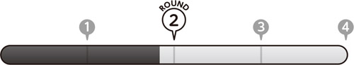
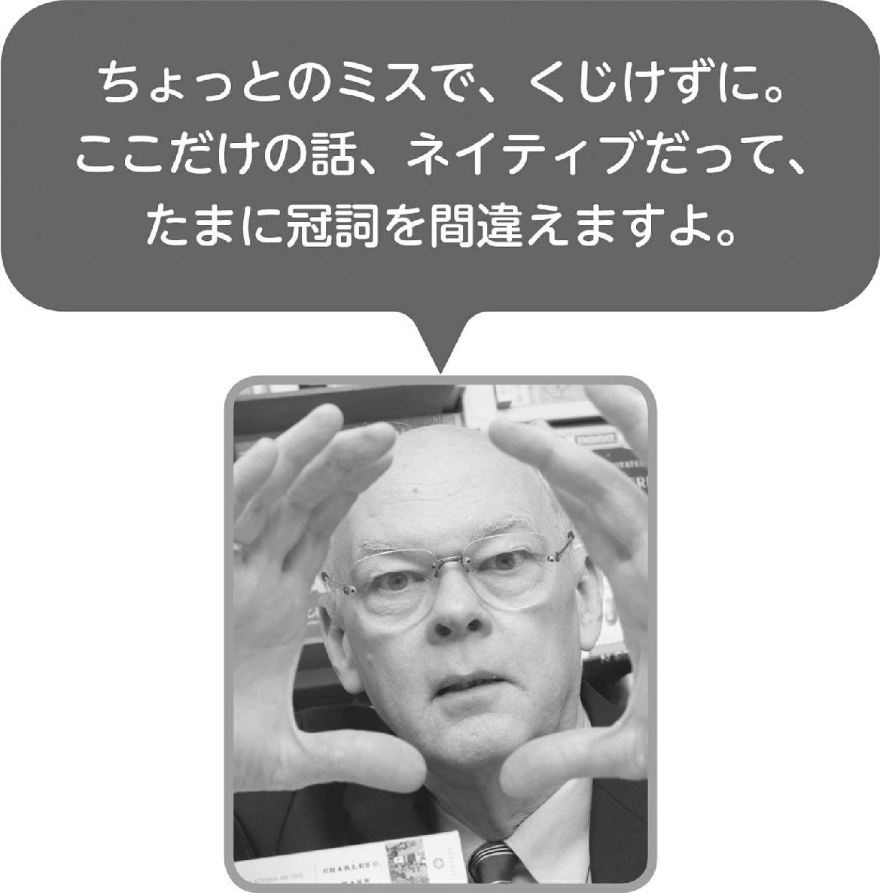
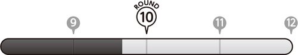

🏠
日
月
縦書き／横書き


| 3つの基本ルール＋αで英語の冠詞はここまで簡単になる | |
| ジェームス・M・バーダマン | |
| (2014) | |
参照項目から元の箇所に戻るには、お使いのビューワーの仕様に従ってください。または一旦目次を表示し、戻りたい箇所の近くの見出しをタップして戻ってください。
はじめに
――冠詞に苦しむすべての人へ――
●理解するには、コツがある●
あなたは、「冠詞はとにかく難しい」「数多くの規則を知らないと、冠詞は正しく使えない」と考えていませんか？ あるいは、例外に気を取られ、やみくもに暗記しようとてこずった結果、「なんだかやっぱり、よく分からない」と諦めた経験があるのでは？ 本当は、そのような苦労も遠回りも必要なかったのです。なぜなら、実際によく使う冠詞のルールは、それほど多くはないからです。
本書では、まず冠詞の基本性質を確実に押さえてもらいます。それを正しく頭に入れるだけでも、多岐にわたる使い回しがずいぶん容易になるはず。さらに、基礎を固めた上で応用例を追加して、徐々に知識を増やしていく仕組みになっています。これにより、知識がすっきり整理され、また、いったん覚えたルールは忘れにくくなるでしょう。
●自力で使えば、冠詞は身に付く●
英語では、話すときも書くときも、冠詞（または無冠詞）が重要な役割を果たします。冠詞によって話題が明確になり、コミュニケーションが円滑になるからです。ところで、ちょっと考えてみてください。ネイティブスピーカーは、冠詞について熟知してからでないと、相手とやり取りできないでしょうか？ 答えはノー。むしろその逆で、実際に相手とコミュニケーションする中で、正しい冠詞の使い方を習得していきます。理屈ではなく直感で、冠詞を使いこなす術を身に付けるのです。
本書を手にしたあなたにも、ネイティブスピーカーと同じ体験をしていただきましょう。その体験とは、まず実用的な英文に接し、自力で冠詞を当てはめてみること。次に、そこではどんな規則が生きているかを探り、その全体像に目を向けていくというアプローチです。実践から理論へ。「意味の暗記を優先するあまり、途中で挫折する」という悪しきパターンに、これできっぱりさよならできるはずです。
●100パーセントの正解を目指す前に●
これから解いていく問題では、必ずしも、正解が1つしかないとは限りません。英文によっては、「冠詞を使っても使わなくても、意味は同じ」というものもあります。また、「a でも the でも正解」というパターンもあります。迷ったら、止まらずとにかく鉛筆を動かし、解き進めることをお勧めします。そうすれば、意外な答えが明らかになることでしょう。
また、100パーセント完ぺきに冠詞をマスターしようなんて、思わなくていいんですよ。7割くらい正解できれば、素晴らしい。市民ランナーは、最初から一流選手のように1位を狙おうとは思いません。まずは完走できれば十分。冠詞の学習もそれと同じです。とにかくどんどん解きましょう。そして、本書を笑顔で完走することを祈っています。
目 次
Round ①
Round ②
Round ③
Round ④
Round ⑤
Round ⑥
Round ⑦
Round ⑧
Round ⑨
Round ⑩
Round ⑪
Round ⑫
この本の使い方
以下のステップに従って、マイペースに冠詞力を身に付けましょう。
Step❶ まずは3問、解いてみる
●英文中の空欄に当てはまる冠詞（a または an、the）を考えましょう。
●無冠詞（冠詞が入らない）と判断したら、そのままにしておきます。
●チェックボックス〼に自己記録しましょう。
答え合わせの後でこのページへ戻り、間違った問題にチェックを付けましょう。
また、正誤に関係なく、難しいと感じた問題にはチェックを付けておきましょう。
チェックが復習の目印になります。後日必ず再挑戦しましょう。
※ハイライトやメモなど電子書籍リーダーの機能を使ってチェックを付けましょう。
●難易度表示が付くことも
注意
やや難
難！
これらのマークが付いた問題は手ごたえあり。正解できたら、すごい。
でも、間違ってもがっかりしないで。
Step❷ 答え合わせして、解説を読む
●自分の解答を正解に照らし、間違った箇所をチェックしましょう。
●解説を必ず読みましょう。正しく答えられた箇所も、解説を読むことで知識がさらに定着します。
●間違った箇所のチェックボックスにチェックを付け、解説を参照の上、正しい知識を補いましょう。
● このマークの番号は、巻末 の「これだけ知れば迷わない 冠詞の使い方13ルール」のルール番号に対応しています。解説を読んだ後は巻末ページも参考に、冠詞の原則について知識を広げましょう。
このマークの番号は、巻末 の「これだけ知れば迷わない 冠詞の使い方13ルール」のルール番号に対応しています。解説を読んだ後は巻末ページも参考に、冠詞の原則について知識を広げましょう。
このマークの番号は、巻末 の「これだけ知れば迷わない 冠詞の使い方13ルール」のルール番号に対応しています。解説を読んだ後は巻末ページも参考に、冠詞の原則について知識を広げましょう。●答え合わせが終わったら、次の3問へ進みます。
●ラウンドの最後では、長文問題「100ワードチャレンジ」に挑戦。100ワード前後の英文を読んで、空欄に入る冠詞を答えましょう。
Step❸ 冠詞の大原則を知る
●「これだけ知れば迷わない 冠詞の使い方13ルール」では、よく使う冠詞の規則を簡潔にまとめてあります。
●必ず押さえたい「3つの大ルール」をはじめ、名詞のタイプで異なる「応用ルール」まで、ルール別に掲載。答え合わせの際に目を通しましょう。
●各問の解説末尾に付いた の番号は、この数字に対応します。
の番号は、この数字に対応します。特に間違った問題は、該当するルールをよく読んで頭に入れておきましょう。
ルールを参照したら、先頭ページのチェックボックスにチェックを付けましょう。
チェックの数が多いほど、「そこを何度も読んだ」という印。つまり、自分が間違えがちな冠詞や、苦手な冠詞のタイプが見えてくるわけです。

ROUND①
この本最初の3問です。リラックスして始めましょう。
001〼【コーヒーの特徴といえば】
コーヒーは素晴らしい香りがします。
（① ）coffee has（② ）wonderful aroma.
002〼【何を買ったの？】
シャツ1着と靴1足を買いました。シャツは安かったけど、靴は高かったです。
I bought（① ）shirt and（② ）pair of shoes.（③ ）shirt was cheap, but（④ ）shoes were expensive.
003〼【デパートで】
A：すみません。お手洗いはどちらでしょうか。
B：2階にありますよ。
A: Excuse me. Which way is（① ）restroom?
B: It's on（② ）second floor.
secondの前に来る冠詞は決まっていますよね。
001正解① 無 〼 ② a 〼
①Coffee has②a wonderful aroma.
①コーヒー一般について指すので冠詞を使いません。また、もし喫茶店で目の前のコーヒーを指して言うとしたら、the coffee（そのコーヒー）ではなくthis coffee（このコーヒー）が適切です。
②素晴らしい香りにもいろいろあります。ここでの香りはその1つと見なしてa を付けます。
002正解① a 〼 ② a 〼 ③ The 〼 ④ the 〼
I bought①a shirt and②a pair of shoes.③The shirt was cheap, but④the shoes were expensive.
①1着のシャツについてここで初めて言及するので、aを使います。
②a pair of 〜（1対の〜）は数を表す単位。靴は左右で1対なのでこのように表されます。
③④1度話題に上った品について引き続き話すため、冠詞をtheに切り替えます。
003正解① the 〼 ② the 〼
A: Excuse me. Which way is①the restroom?
B: It's on②the second floor.
①その施設内のお手洗いに特定されるので、theが適切です。
②the＋序数で特定の階を表します。
ROUND①
状況を想像すれば、どの冠詞が適切か分かります。
004〼【たんすを指して】
あの最上段の引き出しに財布を隠したんだ。
I hid my wallet in（① ）top drawer.
005〼【一緒に散歩中の相手に】
この通りは何という名前なの？
What is（① ）name of this street?
006〼【私にとって音楽は......】
音楽は私の人生で非常に重要な役割を果たしてきました。
（① ）music has played（② ）very important part in my life.
「最上段」は1つしかありませんよね。
004正解① the 〼
I hid my wallet in①the top drawer.
①指さす先に、引き出し付きのたんすが1棹（さお）あると推測できます。特定のたんすの「最上段」の引き出しなので1つしかあり得ません。よって冠詞はtheが適切です。ちなみに、3段の引き出しで「真ん中の引き出し」ならthemiddle drawer、4段以上の場合はthesecond drawer fromthetop（上から2番目の引き出し）のように、いずれもtheを使ってどの引き出しかを表します。
005正解① the 〼
What is①the name of this street?
①this street（この通り）は文脈を考える上で強力なヒント。話し手と聞き手が同じ通りを歩いている状況が推測できます。どの通りか互いに了解しているので、冠詞はtheとなります。
006正解① 無 〼 ② a 〼
①Music has played②a very important part in my life.
①特定の音楽ではなく、音楽一般についてなので冠詞は不要です。
②part（役割）は可算名詞の単数形。また、ここで初めて出てくる情報なのでa を付けます。
ROUND①
問009はちょっと難しいですよ。
007〼【今朝の新聞が読みたくて妹に頼む】
新聞、取ってきてくれる？
Can you bring me（① ）newspaper?
008〼【環境意識の高い工場】
その工場は太陽光発電によって供給されるエネルギーを使用しています。
（① ）factory uses（② ）energy supplied from（③ ）solar power.
009〼【例のコンサートは......】
A：コンサートはいつ？
B：どのコンサート？
A：ほら、あの坂本龍一のコンサートだって。
A: When is（① ）concert?
B: Which concert?
A:（② ）Ryuichi Sakamoto concert.
他ならぬ「あの」コンサートのことです。
007正解① the 〼
Can you bring me①the newspaper?
①自宅に配達される新聞はどれか決まっているのでtheが適切。一方、売店などで売っている新聞を「どれでもいいので1部」買ってきてと頼むなら、a newspaperと表します。
008正解① The 〼 ② 無 〼 ③ 無 〼
①The factory uses②energy supplied from③solar power.
①「その工場」と特定されているのでtheが付きます。
②③ energy（エネルギー）、solar power（太陽光発電）は両方とも不可算名詞。また、ここでは一般的に述べられているので、冠詞は付きません。
009正解① the 〼 ② The 〼
A: When is①the concert?
B: Which concert?
A:②The Ryuichi Sakamoto concert.
Aの指すものが会話の中で明確になっていきます。
①AはコンサートについてBが知っていると考えて話し掛けたので、冠詞はtheを使っています。
②しかし、Bはどのコンサートか思い出せないようです。Aが話題にしているのは、決まった日時に特定の場所で行われる坂本龍一の「あのコンサート」。これは1つしかありません。よって、theを使って念押ししています。
ROUND①
1つに限られるなら冠詞はtheです。
010〼【ちょっと尋ねたい】
1つ質問したいのですが。
I'd like to ask（① ）question.
011〼【原稿書きの最中】
彼はアルバート・アインシュタインの生涯について本を書いています。
He's writing（① ）book on（② ）life of Albert Einstein.
012〼【家庭での権力者は......】
父は建築家、兄（弟）は医者、姉（妹）は弁護士ですが、家庭での親分といったら母です。
My father is（① ）architect, my brother is（② ）doctor, and my sister is（③ ）lawyer, but in our house, my mother is（④ ）boss.
権力者は1人しかいません。
010正解① a 〼
I'd like to ask①a question.
①question（質問）は可算名詞。また、この時点で初出の質問なので、冠詞はaを使います。
011正解① a 〼 ② the 〼
He's writing①a book on②the life of Albert Einstein.
①アインシュタインに関する本は何冊もあり、そのうちの1冊を書いています。よってaを付けます。
②後に続くof Albert Einstein（アルバート・アインシュタインの）で誰の人生か特定されるので、theが適切です。
012正解① an 〼 ② a 〼 ③ a 〼 ④ the 〼
My father is①an architect, my brother is②a doctor, and my sister is③a lawyer, but in our house, my mother is④the boss.
様々な職業が並びますが、④でニュアンスが変わることに気付いたでしょうか。
①② ③職業一般を説明しているので、aを付けます。母音の発音で始まるarchitect（建築家）の直前では、anになる点に注意。
④通常の職業と違い、家庭での意思決定を行う親分という意味です。1人しかいない権力者なのでtheを付けます。
ROUND①
1対のものはまとめてとらえましょう。
013〼【あなたもそこにいた】
テーブルで私の隣に座っていたあの女性を覚えていますか。
Do you remember（① ）woman who sat next to me at（② ）table?
014〼【お箸派？ 「ナイフとフォーク」派？】
あなたは普段お箸で食べますか。それともナイフとフォークの方が好きですか。
Do you usually eat with（① ）chopsticks or do you prefer（② ）knife and（③ ）fork?
015〼【自然と都会を比べて】
私たちは自然が大好きだから、都会には住みたくありません。
We love（① ）nature, so we don't like living in（② ）city.
「ナイフとフォーク」で1セットです。
013正解① the 〼 ② the 〼
Do you remember①the woman who sat next to me at②the table?
①② どのテーブルと女性について尋ねているか聞き手にも分かるので、いずれもtheを付けて表します。
014正解① 無 〼 ② a 〼 ③ 無 〼
Do you usually eat with①chopsticks or do you prefer②a knife and③fork?
①chopsticks（箸）は2本1組なので複数形。また、どの箸とは特定されないので冠詞は付きません。
②③ 通常、2種以上で1組の物を表す場合、冠詞を付けるのは最初の名詞だけです。a cup and saucer（カップと受け皿のセット）、a knife, fork, and spoon（ナイフ、フォーク、スプーンのセット）のように使われます。
015正解① 無 〼 ② the 〼
We love①nature, so we don't like living in②the city.
①life（生命）、water（水）、happiness（幸福）などと同様、nature（自然）は不可算名詞です。よって、冠詞は付きません。
②the＋名詞の単数形でそのグループの特徴を総称的に表します。ここではある都市を指すのではなく、「住む場所」としての機能を備えた都会を総称しています。よって、冠詞はtheが適切です。
016正解① the 〼 ② the 〼 ③ the 〼 ④ the 〼 ⑤ 無 〼 ⑥ an 〼 ⑦ a 〼 ⑧ the 〼
Hi Stan, How're things going with you? I've just finished①the big project I told you about. We somehow made②the deadline and③the customer was happy with our work. So, for④the first time in⑤months, I have some time on my hands.
Whenever you have⑥an afternoon off, let me know. We can have⑦a catch-up session at⑧the café next door.
Yours, Chuck
①⑧ スタンとチャックが互いに知っている企画と、喫茶店に特定されるので、冠詞はいずれもtheです。
②③ 特定の企画の締め切りは1つだけ、顧客も1人に特定されるため、いずれもtheが適切。make the deadlineのmakeは「～に間に合う」という意味です。
④序数に付く冠詞はtheです。
⑤期間を複数形で一般的に表すため、無冠詞。また、for the first time in 期間で「（期間）ぶりに」という意味です。
⑥どの午後でも構わないので、冠詞はanが適切です。なお、have ～ off（～の間の休みを取る）のoffは「休みで、休暇で」という意味の副詞。～にはa day、two weeksなどの期間が入ります。
⑦ここで初めて話題にする打ち合わせなので、冠詞はaが適切です。
ROUND②
話し手がどんな状況にいるか、よく考えてみましょう。
017〼【自宅の水漏れについて】
台所に入ったら、床一面が水浸しでした。
When I walked into（① ）kitchen, there was（② ）water all over（③ ）floor.
018〼【歴史ジャンルは好きですか】
A：あなたは歴史に興味がありますか。
B：はい、でも、自国の歴史についてはあまり知りません。
A: Are you interested in（① ）history?
B: Yes, but I don't know much about（② ）history of my own country.
019〼【料理中に電話が鳴って】
手が濡れているの。電話に出てもらえる？
My hands are wet. Would you please answer（① ）telephone?
台所って、普通は一家に1つですよね。
017正解① the 〼 ② 無 〼 ③ the 〼
When I walked into①the kitchen, there was②water all over③the floor.
①③1室に特定される部屋（台所、居間、浴室など）やそれを構成するパーツ（床、天井、壁など）にはtheを使います。寝室などが複数ある場合は、my bedroom（私の寝室）、Anne's bedroom（アンの寝室）、the upstairs bedroom（上階の寝室）のように区別して表します。
②water（水）は不可算名詞なので冠詞は付きません。
018正解① 無 〼 ② the 〼
A: Are you interested in①history?
B: Yes, but I don't know much about②the history of my own country.
①広義のhistory（歴史）は不可算名詞で、冠詞が付きません。
②一方、Bはof my own country（自国の）で情報を限定しています。特定の国の歴史なのでtheを付けます。
019正解① the 〼
My hands are wet. Would you please answer①the telephone?
①どの電話が鳴っているか、相手にも明らかに分かっています。よってtheを付けて表します。
ROUND②
問022は長めの文章ですが、落ち着いて解きましょう。
020〼【世界的規模のネットワーク】
インターネットはよく使いますか。
Do you use（① ）Internet frequently?
021〼【どこで見ても太陽は1つ】
海に沈む太陽は美しいものです。
It's beautiful when（① ）sun sets over（② ）ocean.
022〼【友人の家族について】
彼女とだんなさんには男の子と女の子の2人のお子さんがいます。男の子は高校生、女の子は大学生です。だんなさんは電子機器メーカーで働いていて、彼女自身は今仕事をしていません。
She and her husband have two children,（① ）boy and（② ）girl.（③ ）boy is（④ ）high school student and（⑤ ）girl is（⑥ ）university student. Her husband works for（⑦ ）electronics company and she doesn't have（⑧ ）job right now.
初めて伝える情報にはaかanを付けますよ。
020正解① the 〼
Do you use①the Internet frequently?
①インターネット（Internet）は世界に1つしかないネットワークなので、theを付けます。
021正解① the 〼 ② the 〼
It's beautiful when①the sun sets over②the ocean.
①太陽（sun）、月（moon）、空（sky）などはそれ自体、本質的に唯一のものなのでtheが必要です。
②the＋名詞の単数形で、海を総称的に表しています。
022正解① a 〼 ② a 〼 ③ The 〼 ④ a 〼 ⑤ the 〼 ⑥ a 〼 ⑦ an 〼 ⑧ a 〼
She and her husband have two children,①a boy and②a girl.③The boy is④a high school student and⑤the girl is⑥a university student. Her husband works for⑦an electronics company and she doesn't have⑧a job right now.
①② 相手にとって初めて聞く情報なのでaを付けて表します。
③⑤既に述べた情報を受けて、theに切り替えます。
④⑥ ⑦ ⑧ student（生徒、学生）、job（仕事）は可算名詞の単数形なのでaを付けます。electronics company（電子機器メーカー）も可算名詞の単数形ですが、母音の発音で始まるのでanが付く点に注意。
ROUND②
問024では、ページと段落の表し方がちょっと違います。
023〼【何か弾いたりなさいますか】
A：あなたは楽器を弾きますか。
B：はい、ピアノを弾きます。
A: Do you play（① ）instrument?
B: Yes, I play（② ）piano.
024〼【上から数えて2番目の段落】
45ページの2段落目に誤植が1つあります。
（① ）second paragraph on（② ）page 45 has（③ ）misprint.
025〼【スポーツ全般に無関心】
私は概してスポーツには興味がないのですが、相撲なら見ます。
I'm generally not interested in（① ）sports, but I do watch（② ）sumo.
secondなど序数と相性の良い冠詞はどれでしたか？
023正解① an 〼 ② the 〼
A: Do you play①an instrument?
B: Yes, I play②the piano.
①様々な楽器のうち、どれか1つを表すので不定冠詞が適切。ここでは母音の発音で始まる単語が直後に来るため、aではなくてanとなります。
②the＋名詞の単数形で楽器の種類（ここではピアノ）を総称します。通常、「楽器を弾く」は「play the＋楽器」となります（ミュージシャンなどには、「play＋楽器」のように無冠詞で表す人もいます）。
024正解① The 〼 ② 無 〼 ③ a 〼
①The second paragraph on②page 45 has③a misprint.
①the＋序数で特定の段落を示しています。
②page 45（45ページ）の他、row 3（3列目）、column 2（第2段）のように名詞＋数の組み合わせで使うとき、冠詞は必要ありません。もし序数で表すならonthe 45th page（45ページ目に）、inthe third row（3列目に）、inthe second column（第2段に）のようにtheが必要です。
③誤植は1つ、2つと数えられるのでaを付けます。
025正解① 無 〼 ② 無 〼
I'm generally not interested in①sports, but I do watch②sumo.
①複数形sportsでスポーツ全般を総称して表すので、冠詞は付きません。
②相撲は競技の1つですが、soccerやgolfと同様、不可算名詞なので冠詞は付きません。
ROUND②
その言葉が語られる背景を考えましょう。
026〼【私の友人のことをお話しします】
テリーはとても社交的で心の温かい人です。
Terry is（① ）very sociable, warm-hearted person.
027〼【雨が降り始めた】
A：傘を1本貸してくれませんか。
B：いいですよ、そこの隅にあるやつを持って行ってね。
A: Could you lend me（① ）umbrella?
B: Sure, take（② ）one over there in（③ ）corner.
028〼【書店で店員に話し掛ける】
すみません、J・K・ローリングの本を1冊注文したんですが。もう入荷したでしょうか。
Excuse me, I ordered（① ）book by J. K. Rowling. Has it come in yet?
指さしで示せるものは大概、theが付きます。
026正解① a 〼
Terry is①a very sociable, warm-hearted person.
①述べられている人物は特定されない1個人なので、aが適切です。
027正解① an 〼 ② the 〼 ③ the 〼
A: Could you lend me①an umbrella?
B: Sure, take②the one over there in③the corner.
①どれか1本の傘を求めているので不定冠詞が適切。umbrellaの発音は母音で始まるので、冠詞はanを使います。
②③ Bは互いに見える範囲を身ぶりで示し、どの隅にあるどの傘か指しています。よって、いずれもtheが適切。なお、oneは前出の名詞（ここではumbrella）を表す代名詞です。
028正解① a 〼
Excuse me, I ordered①a book by J. K. Rowling. Has it come in yet?
①J・K・ローリングの著作の1冊について、ここで初めて挙げています。よって、aが適切です。
ROUND②

文脈を基に特定できるかどうかが、ポイントです。
029〼【具体名は出さない】
私は、嫌いな都市に住むより他に選択肢のない人々を、気の毒に思います。
I feel sorry for（① ）people who have to live in（② ）cities that they hate because they have no choice.
030〼【開店したばかりの店。感想は？】
A：あの新しいレストランをどう思いましたか。
B：雰囲気は良かったですが、サービスが遅いと思いました。
A: What did you think of（① ）new restaurant?
B: I thought（② ）atmosphere was good, but（③ ）service was slow.
031〼【乗ろうとした路線がストップ。出先から一報】
電車が今走ってないので、会議の時間を変更できますか。
（① ）trains aren't running now, so could we reschedule（② ）meeting?
すべての電車が止まったわけではありません。
029正解① 無 〼 ② 無 〼
I feel sorry for①people who have to live in②cities that they hate because they have no choice.
①不特定多数の人々なので冠詞は不要です。
②どこか特定しているわけではなく、複数形で都市全般を指しています。よって、冠詞は付きません。
030正解① the 〼 ② the 〼 ③ the 〼
A: What did you think of①the new restaurant?
B: I thought②the atmosphere was good, but③the service was slow.
①どの新しいレストランのことか互いに了解しているのでtheを付けます。
②③ atmosphere（雰囲気）もservice（サービス、給仕、接客）もそのレストランの特徴です。よって、いずれもtheが適切です。
031正解① The 〼 ② the 〼
①The trains aren't running now, so could we reschedule②the meeting?
①直近の運行状況に照らし、会議の場所へ向かう路線の電車に限定して述べている点がポイント。正解はtheです。
②予定していた会議のことだと互いに分かっているので、使う冠詞はtheです。
ネイティブを目指せ！
100ワードチャレンジ
032〼
トレイシーへの電話を受けたジム。彼になったつもりで、おおまかな内容をメモに残して伝えましょう。
＊語注＊ office supply：事務用品 filing cabinet：書類キャビネット
pass along ～ to someone：～を人に伝える bring ～ up：（問題など）を持ち出す
トレイシーへ ジムより
伝言 君が席をはずしている間に、うちが取引している事務用品会社から電話があったよ。安い書類キャビネットが入荷したから、注文したいか知りたいとのこと。君に話を伝えておくって、言っておいた。
これは良い機会かもね。午後の部内会議で提案しようよ。
032正解① a 〼 ② the 〼 ③ an 〼 ④ the 〼 ⑤ a 〼 ⑥ the 〼
To: Tracy From: Jim Message: While you were away, you got①a phone call from②the office supply company we deal with. He said they just received some low-priced filing cabinets and asked if we might want to place③an order. I told him I'd pass along④the message to you.
Maybe this is⑤a good chance. Let's bring it up in⑥the departmental meeting this afternoon.
①call（電話の呼び出し）は可算名詞。ここで初出の情報なので、aを付けます。
②取引があり、どの事務用品会社か互いに分かるので冠詞はtheです。
③order（注文）は可算名詞。1回の注文なので不定冠詞が適切です。母音の発音で始まる単語の直前なのでanが正解。place an order（注文する）は丸ごと覚えておくと便利な表現です。
④⑥ 文脈上、どんな伝言か特定されます。また、日時の決まった特定の会議なので、いずれも冠詞はtheとなります。
⑤多くの好機のうちの1つなので、aを付けます。
ROUND③
互いに共有している話題なら、特定できます。
033〼【どの車にするかは決めてないけど】
私は古い車を売って、新しいのを買おうと決めました。
I've decided to sell my old car and buy（① ）new one.
034〼【期末試験を控え、快晴の1日】
A：なんて素晴らしい日だろう！
B：宿題と、今度の試験の勉強をするのに最適だね。
A: What（① ）beautiful day it is!
B: It's perfect for doing（② ）homework and studying for（③ ）test.
035〼【ウェブデザイン業界と雇用の一般的な傾向】
ウェブデザインは雇用機会が望める新興分野です。
Web design is（① ）emerging field with（② ）opportunities for（③ ）employment.
問034は特に「あの試験」のことを言っています。
033正解① a 〼
I've decided to sell my old car and buy①a new one.
①今の車に対し、まだ特定されない新しい1台を指しているのでaを使います。ちなみにoneは前出の名詞（ここではcar）を表す代名詞です。
034正解① a 〼 ② 無 〼 ③ the 〼
A: What①a beautiful day it is!
B: It's perfect for doing②homework and studying for③the test.
①様々な「素晴らしい日」のうちの1日と見なし、aを付けます。
②homework（宿題）は不可算名詞なので冠詞は付きません。
③文脈上、2人が知っている特定の試験のことなのでtheが適切です。
035正解① an 〼 ② 無 〼 ③ 無 〼
Web design is①an emerging field with②opportunities for③employment.
①新興分野の1つなので不定冠詞。母音の発音で始まる単語の直前なので、anとします。
②③ opportunities（機会）は可算名詞の複数形（opportunityは通常、不可算名詞ですが、ここでのように「具体的な機会」を表す場合は可算名詞として扱われます）。employment（雇用）は不可算名詞。いずれも一般的な意味なので、冠詞は不要です。
ROUND③
「数えられるかどうか」も、冠詞を判断するポイントです。
036〼【日光にはどんな働きがあるだろう】
日光は植物の成長を促します。
（① ）sunlight encourages（② ）growth of（③ ）plants.
037〼【いつもの場所にある、いつものテーブル】
あのお客さんはいつも入り口の横の三角テーブルに座ります。
That customer always sits at（① ）corner table next to（② ）entrance.
038〼【そもそも戦争というものは......】
戦争は決して好ましい結果につながりません。
（① ）war never leads to（② ）positive outcome.
「戦争＝戦っている状態」ですので、数えられません。
036正解① 無 〼 ② the 〼 ③ 無 〼
①Sunlight encourages②the growth of③plants.
①日光は不可算名詞。また、特定の場所に当たる日光ではなく、日光の働き全般について述べているので冠詞は不要です。
②後に続くof plants（植物の）で何の成長か特定されるため、theを付けます。
③植物一般を表す可算名詞の複数形なので、冠詞は不要です。
037正解① the 〼 ② the 〼
That customer always sits at①the corner table next to②the entrance.
①「入り口の横の」からどの三角テーブルか特定されます。よってtheが適切です。
②特定の部屋の入り口なので1カ所しかなく、冠詞はtheです。
038正解① 無 〼 ② a 〼
①War never leads to②a positive outcome.
①war（戦争、戦争状態）はlife（生命）、money（金銭）、history（歴史）と同様に不可算名詞で、通常、冠詞は付きません。
②outcome（結果、所産、結末）は可算名詞なのでaが付きます。
いずれも特定せず、一般論として述べているのでtheは付きません。
ROUND③
難しそうに見えても、冠詞の基本はシンプルです。
039〼【ゴルフはなさいますか】
あなたのお父さんはゴルフをしますか。
Does your father play（① ）golf?
040〼【それがすべてじゃないにしても】
思いやりはとても大事な特質です。
（① ）kindness is（② ）very important characteristic.
041〼【また今日も汗が流れる1日】
今日はとても暑いです。
It's（① ）very hot day today.
多くのうちの1つなら、冠詞はaかanが基本。
039正解① 無 〼
Does your father play①golf?
①ゴルフは不可算名詞なので、冠詞は不要です。なお、「ゴルフの1ラウンド」ならa round of golfとなります。
040正解① 無 〼 ② a 〼
①Kindness is②a very important characteristic.
①思いやりは不可算名詞で、また文脈上もどんな思いやりかは特定していません。よって、冠詞は不要です。
②大事な特質にもいろいろあり、そのうちの1つとして挙げています。よって、aが適切です。
041正解① a 〼
It's①a very hot day today.
①とても暑い日はたくさんあり、そのうちの1日なのでaを付けます。
ROUND③
単語の意味と可算・不可算もヒントになります。
042〼【実は急ぎの仕事があります】
私は今月末までに完成しなければいけない企画を担当しています。
I'm working on（① ）project that has to be completed by（② ）end of this month.
043〼【どこかに良い店ないかしら】
良いレストランを薦めてくれませんか。
Can you recommend（① ）good restaurant?
044〼【やることは選びたい】
私は求職中ですが、長時間の仕事はしたくありません。
I'm looking for（① ）work but I don't want（② ）job with long hours.
「仕事」とひとくちに言っても、workとjobは使い方が違います。
042正解① a 〼 ② the 〼
I'm working on①a project that has to be completed by②the end of this month.
①相手にとって初めて知る企画なのでaが付きます。
②各月の初め（beginning）、中頃（middle）、末（end）は時期を限定されるので、theを付けます。
043正解① a 〼
Can you recommend①a good restaurant?
①「良いレストラン」の部類に入ればどこでもいいので1軒教えて、という意味。よって、冠詞はaが適切です。
044正解① 無 〼 ② a 〼
I'm looking for①work but I don't want②a job with long hours.
日本語では「仕事」1語に幅広い意味が含まれますが、英語では次のように単語を使い分けます。
①workは「労働、作業、勉強、研究」など仕事一般を表す不可算名詞なので、冠詞は不要です。
②jobは「手間仕事、請負業務」など具体的な「個々の仕事」を指す可算名詞です。
日本語と違う英語の概念を把握することも、冠詞の正しい使い分けのために重要です。
ROUND③
問046と047は難しいので、じっくり考えましょう。
045〼【知人宅の庭で】
お花がきれいですねえ。
（① ）flowers are beautiful.
046〼【場所を特定せず、雰囲気を説明してみる】
私の夫が働く会社は、町の閑静な地域にあります。
（① ）office where my husband works is located in（② ）quiet part of（③ ）town.
047〼【アキバの持つ様々な顔の1つ】
秋葉原はパソコンマニアたちの楽園という評判です。
Akihabara has（① ）reputation as（② ）paradise for（③ ）computer geeks.
1つしかあり得ないものにはtheが付きますが、そうでないなら？
045正解① The 〼
①The flowers are beautiful.
①目の前の花を指して言うのでtheが適切。なお、ここで無冠詞にすると、花一般を説明する意味になります。
046正解① The 〼 ② a 〼 ③ 無 〼
①The office where my husband works is located in②a quiet part of③town.
①後に続くwhere my husband works（私の夫が働く）でどの会社か特定されます。
②幾つもあり得る閑静な地域のうち、どこか1つを表します。よって、aが適切です。
③このtownは個別の町ではなく、「自分の住んでいる町」や「付近の主要な町」を表す不可算名詞で冠詞が付きません。
047正解① a 〼 ② a 〼 ③ 無 〼
Akihabara has①a reputation as②a paradise for③computer geeks.
①様々な評判の1つなのでaを使います。havea reputation as 〜（〜としての評判がある）の他、havea good reputation（評判が良い）も押さえておきましょう。
②paradiseは「（死後に行く）天国」という意味では不可算名詞。一方、ここでのように「理想の地、楽しい場所」という意味では可算名詞で、そのうちの1カ所なのでaを付けます。
③パソコンに熱中する人々全般を指すので、冠詞は不要です。
048正解① a 〼 ② 無 〼 ③ a 〼 ④ 無 〼 ⑤ the 〼 ⑥ the 〼
Nancy, Our section is planning①a meeting to taste②samples of cookies from five different companies. Could you arrange that for me? We need③a table that is big enough for several boxes of samples and has 10 chairs. If you can get④room 501 on⑤the fifth floor, that would be great. We'll need to use⑥the room from 10:30 to 11:30.
Thanks, Ellen
①文脈から、予定中の試食会についてはここで初めて述べていると分かります。よって、冠詞はaが適切です。
②いずれか5社のクッキーという以外に、ここではどのサンプルかまだ特定されていません。また、複数形なので冠詞は不要です。
③どの1台でもいいので冠詞はaです。
④名詞＋数で部屋番号を表します。冠詞は不要です。
⑤the＋序数で何階か特定しています。
⑥前述の部屋を指すのでtheが正解です。
ROUND④
飲み物は「数えられない」と思いがちですが......。
049〼【2つの語句の違いを知りたい】
put togetherとassembleの違いは何ですか。
What's（① ）difference between "put together" and "assemble"?
050〼【医師として働く人の基本】
医師は人が好きでなければ務まりません。
（① ）doctor must like（② ）people.
051〼【グラスビール、冷えてますよ】
ビールを1杯いかがですか。
Would you like to have（① ）beer?
「1杯」「2杯」......という単位で数えられますよね。
049正解① the 〼
What's①the difference between "put together" and "assemble"?
①put together（組み立てる、まとめる、合計する）とassemble（集める、組み立てる）という特定の語句を比べ、その違いに限定して尋ねています。よって、theが適切です。
050正解① A 〼 ② 無 〼
①A doctor must like②people.
①医師の職に就いている人を一般的に表すので、aを付けます。冠詞を付けず複数形でDoctors must like people.と言っても同じ意味です。
②不特定多数の人々を表すので冠詞は付きません。
051正解① a 〼
Would you like to have①a beer?
①a beerで、「ビールを1杯」という意味。aglass/can/bottle of beer（1杯／1缶／1瓶のビール）などの計量単位が省略されたと考えましょう。単位に関係なく「ビール」そのものを表す場合は冠詞が付きません。
ROUND④
一般的な話か、文脈で判断する問題かを見極めましょう。
052〼【先日買った本を紹介する】
これがあの書店で買ったその本です。
This is（① ）book that I bought at（② ）bookstore.
053〼【ブログ投稿の一般常識】
ブログを書く会社員は、勤め先について書き込む内容に注意すべきです。
（① ）employees who write（② ）blogs should be careful about what they say about（③ ）company.
054〼【巨匠の絵画展が多数開催中】
A：あなたはどの展覧会に行きましたか。
B：ピカソ展です。
A: Which exhibit did you go to?
B:（① ）Picasso exhibit.
「ピカソ展」と言えば「ああ、あれね」と分かる話題です。
052正解① the 〼 ② the 〼
This is①the book that I bought at②the bookstore.
①後に続くthat I bought以下でどの本か特定されます。よって、theが適切です。
②その書店と特定しているので、こちらもtheを使います。
053正解① 無 〼 ② 無 〼 ③ the 〼
①Employees who write②blogs should be careful about what they say about③the company.
①②会社員一般、ブログ一般を表す複数形なので、いずれも冠詞は付きません。
③前出の会社員と会社の関係がヒント。彼らが勤務する特定の企業を指すので、冠詞はtheです。
054正解① The 〼
A: Which exhibit did you go to?
B:①The Picasso exhibit.
AはBが何かの展覧会に行ったことは知っていても、どの展覧会かまでは分かりません。そのため、ここで詳しく尋ねています。
①開催中の展覧会のうち、Bが行ったのはピカソ展に特定できます。よってtheが適切です。
ROUND④
問055はコンピューター1台の話ではありません。
055〼【コンピューター類をひとまとめに】
コンピューターは非常に効率的な研究用ツールになり得ます。
（① ）computer can be（② ）powerful research tool.
056〼【採用されたか気になる】
フランクは求職中だと言っていました。応募した仕事には就けたんでしょうか。
Frank told me he was looking for（① ）job. Did he get（② ）job he applied for?
057〼【電車本体の走る速さを比べる】
新幹線の速度は急行列車（の速度）より速いです。
（① ）Shinkansen's speed is much greater than（② ）express's.
名詞の単数形を使って、グループを総称するには？
055正解① The 〼 ② a 〼
①The computer can be②a powerful research tool.
①the＋名詞の単数形で特定のグループ（ここではコンピューター類）を総称的に表します。
②幾つかの効率的な研究用ツールのうち1つを指すので、aを付けます。
056正解① a 〼 ② the 〼
Frank told me he was looking for①a job. Did he get②the job he applied for?
①特定の仕事ではなく、何らかの仕事を探しています。よって冠詞はaが適切です。
②後に続くhe applied for（彼が応募した）でどの仕事か特定されるので、theが正解。apply for 〜は「〜に申し込む」という意味です。
057正解① A 〼 ② an 〼
①A Shinkansen's speed is much greater than②an express's.
①鉄道の種類としての新幹線（the Shinkansen）にはtheが付きますが、そのうちの1台を指す場合の冠詞はaです。
②これも1台の急行列車なので不定冠詞が正解。母音の発音で始まる単語の直前なのでanです。an express's speedのspeedが省略されています。
ROUND④
問058は正解を知れば「なんだ、そうか」と思うはず。
058〼【姉妹も、兄弟もいない】
彼女は一人っ子です。
She is（① ）only child.
059〼【席種でどれくらい違うの？】
エコノミークラスの運賃は、ビジネスクラスの運賃の半分です。
（① ）price of（② ）economy-class ticket is half（③ ）price of（④ ）business-class ticket.
060〼【将来のことを知りたい】
あなたの将来の計画は何ですか。
What are your plans for（① ）future?
「一人っ子」と「唯一の子ども」は意味が違います。
058正解① an 〼
She is①an only child.
①an only childは「兄弟姉妹がいない人」、つまり「一人っ子」です。一方、the only childと言うと大人のグループ中の「唯一の子ども」という意味になります。
059正解① The 〼 ② an 〼 ③ the 〼 ④ a 〼
①The price of②an economy-class ticket is half③the price of④a business-class ticket.
①③ いずれも特定の席種の運賃なので、theが適切です。
②④ エコノミークラスとビジネスクラスの通常の搭乗券1枚分の料金を比較しています。よって、不定冠詞を使います。②は母音の発音で始まる単語の直前なのでanとします。
060正解① the 〼
What are your plans for①the future?
①不可算名詞futureは「将来、未来」の総称として、通常はtheを付けて使います。可算名詞として使うと「前途、成功の見込み」の意味になり、aを付けてa man witha future（前途有望な男性）のように表します。
ROUND④
チャプター1最後の3問。問063ではやや難しいルールにも挑戦します。
061〼【途中でコンビニがあったら寄ろう】
会議が始まる前に、コンビニエンスストアに寄って飲み物を買おうよ。
Let's stop at（① ）convenience store and buy（② ）drinks before（③ ）meeting starts.
062〼【いろいろな要因の1つ】
教育は、仕事で成功するための鍵を握る要因です。
（① ）education is（② ）key element in success on（③ ）job.
063〼【最近はどんなふうに教えるの？】
小学校では生徒に算数を教える仕事の補助として、電子タブレットを活用している教師がいます。
To help with（① ）task of teaching（② ）math to students in（③ ）elementary school, some teachers are making（④ ）use of（⑤ ）electronic tablets.
校舎か、教育現場かで冠詞の使い方は異なります。
061正解① a 〼 ② 無 〼 ③ the 〼
Let's stop at①a convenience store and buy②drinks before③the meeting starts.
①どの店かは特定していないので、冠詞はaが適切です。
②何らかの飲み物を幾つか買うので、冠詞は不要です。
③どの会議か互いに了解しています。よってtheを付けます。
062正解① 無 〼 ② a 〼 ③ the 〼
①Education is②a key element in success on③the job.
①education（教育）は一般的な意味の不可算名詞なので無冠詞です。
②様々な要因の1つなのでaを付けます。
③job（仕事、職）を全体的、総括的に示すためにtheを付けます。また、on the job（仕事に就いて、仕事中で）はひとまとまりの表現としてもよく使われます。
063正解① the 〼 ② 無 〼 ③ 無 〼 ④ 無 〼 ⑤ 無 〼
To help with①the task of teaching②math to students in③elementary school, some teachers are making④use of⑤electronic tablets.
①of teaching以下で業務が特定されるため、theが付きます。
②⑤ math（算数、数学）は不可算名詞。electronic tablets（電子タブレット）は可算名詞の複数形で、そのツール全般を表します。よって、いずれも冠詞は不要です。
③校舎ではなく教育の現場としてのelementary school（小学校）は冠詞が付きません。
④make use of 〜（〜を利用する）は決まり文句として丸ごと覚えましょう。
064正解① a 〼 ② the 〼 ③ the 〼 ④ The 〼 ⑤ the 〼 ⑥ a 〼 ⑦ a 〼 ⑧ the 〼
Dear Mr. Gray, It was①a pleasure speaking with you on②the phone③the day before yesterday.④The ideas for⑤the ad campaign that you proposed were very stimulating. I'm confident that we can work out⑥a proposal that our company and yours will agree to. Could I ask you to prepare⑦a written proposal based on our conversation? It would be helpful to me when I discuss⑧the matter with my department.
I look forward to hearing from you at your convenience.
Sincerely yours, Adrian Chambers
①pleasure（楽しいこと）は可算名詞なので冠詞はaです。It wasa pleasure -ing / to do（～してうれしかったです）の形でしばしば使われます。
②on the phone（電話で）は決まり文句。theを含むひとまとまりの表現として覚えましょう。
③④ before yesterday（昨日の前）で「一昨日」に特定され、またthat you proposed（あなたが提案した）でどの案か分かります。よって、いずれも冠詞はtheです。
⑤⑧ 広告キャンペーンは両者間で周知の内容、matter（事柄、問題）は既出の内容なので、冠詞はいずれもtheとなります。
⑥⑦ どのような提案・企画書になるかまだ明らかではなく、特定できません。よって冠詞はいずれもaが適切です。
ROUND⑤
ここからは、「3つの大ルール」の他、「応用ルール」もたくさん出題されます。
065〼【安くて良いホテルはないかな】
A：近くに手頃なホテルはありますか。
B：ブロードウェイホテルが近くて、そんなに高くないですよ。
A: Is there（① ）reasonable hotel near here?
B:（② ）Broadway Hotel is close and it's not too expensive.
066〼【同僚の1人にこんな人が】
転職しようと考えている同僚がいるんです。
（① ）coworker of mine is planning to change（② ）jobs.
067〼【パリはどんなところ？】
フランスの首都パリは刺激的な都市です。
（① ）Paris,（② ）capital of（③ ）France, is（④ ）exciting city.
問067は簡単。でも、うっかりミスはないですか？
065正解① a 〼 ② The 〼
A: Is there①a reasonable hotel near here?
B:②The Broadway Hotel is close and it's not too expensive.
①一般的なホテルの1つという意味なので冠詞はaです。
②ホテル名にはtheを付けます。
066正解① A 〼 ② 無 〼
①A coworker of mine is planning to change②jobs.
①ある人物についてここで初めて話題にしているのでaを使い、同僚のうちの1人を指しています。
②change jobs（転職する）はひとまとまりの表現として覚えましょう。この表現ではjobs（職、仕事）を無冠詞の複数形で使うことにも注意。
067正解① 無 〼 ② the 〼 ③ 無 〼 ④ an 〼
①Paris,②the capital of③France, is④an exciting city.
①③都市名、国名なので冠詞は付きません。
②普通、1国に首都は1つしかないためtheを付けます。
④パリは多くの刺激的な都市の1つと見なして不定冠詞を付けます。ここでは母音の発音で始まる単語の直前なので、anとなります。
ROUND⑤
日付の読み方には正解が2通りあります。
068〼【特にこの週が狙い目】
5月の第1週は、京都を訪問するのに素晴らしい時期です。
（① ）first week of（② ）May is（③ ）wonderful time to visit（④ ）Kyoto.
069〼【週末ごとに立つ市場について】
毎週土曜日、ブライトンの農産物市はお客さんでいつもにぎわいます。
On（① ）Saturdays,（② ）farmers' market in Brighton is always filled with（③ ）customers.
070〼【③ ④は日付の読み方を答えよう】
6月5日に行われる会議の議題を添付したのでご確認ください。
Attached please find（① ）agenda for（② ）meeting to be held on（③ ）June（④ ）5.
ブライトンはイギリス南東部にある保養地です。
068正解① The 〼 ② 無 〼 ③ a 〼 ④ 無 〼
①The first week of②May is③a wonderful time to visit④Kyoto.
①the＋序数でどの週か特定するためtheを使います。
②月の名前には冠詞が付きません。
③素晴らしい時期にもいろいろあり、そのうちの1つを指すのでaが適切です。
④都市名に冠詞は付きません。
069正解① 無 〼 ② the 〼 ③ 無 〼
On①Saturdays,②the farmers' market in Brighton is always filled with③customers.
①通常、曜日に冠詞は付きません。なお。毎週土曜日なので複数形Saturdaysとなります。
②ブライトンで催される特定の農産物市を指すので、theが正解です。
③複数形で不特定多数の客を指すので冠詞は不要です。
070正解① the 〼 ② the 〼 ③ 無 〼 ④ 無またはthe 〼
Attached please find①the agenda for②the meeting to be held on③June④(the) 5.
Attached please find ～（～を添付したので確認してください）はメールによく使う表現です。
①② 6月5日開催の会議とそこでの議題なので、いずれも情報が特定されます。よって冠詞はどちらもtheです。
③④月の名前に冠詞は付きません。また、アメリカ英語では通常、June 5と表記してJunefifthまたはJunethe fifthと読みます（June fiveと読む人もいます）。
ROUND⑤
通信手段を表す独特の言い方を覚えましょう。
071〼【出欠を取りたい】
土曜日のパーティーに参加できるかどうか、メールで知らせてください。
Please let me know by（① ）e-mail whether you can come to（② ）party on（③ ）Saturday.
072〼【ぐるっと一巡りしました】
私の両親は、大西洋周遊に参加しました。
My parents took（① ）cruise on（② ）Atlantic Ocean.
073〼【なじみの店か、初めての店か？】
A：晩ご飯はいつもの店に行きましょうか。
B：どこか新しい店に行ってみませんか。
A: Shall we go to（① ）usual place for（② ）dinner?
B: Why don't we try（③ ）new place?
「冠詞が付かない」のはどんな場合でしょうか。
071正解① 無 〼 ② the 〼 ③ 無 〼
Please let me know by①e-mail whether you can come to②the party on③Saturday.
①by＋通信手段には冠詞が付きません。
②文脈から読み手が招待されている特定のパーティーだと分かります。よって冠詞はtheが適切です。
③通常、曜日には冠詞が付きません。
072正解① a 〼 ② the 〼
My parents took①a cruise on②the Atlantic Ocean.
①1回の周遊なので冠詞はaが適切です。take a cruise（船で周遊する）をひとまとまりの表現として押さえてもよいでしょう。
②特定の海洋を指すのでtheを付けます。
073正解① the 〼 ② 無 〼 ③ a 〼
A: Shall we go to①the usual place for②dinner?
B: Why don't we try③a new place?
①文脈から、AとBは互いに知っている特定の店によく行くことが分かります。よって、the を付けて表します。
②breakfast（朝食）、lunch（昼食）、dinner（夕食）などの食事に冠詞は付きません。
③ここで初出の情報なので、冠詞はaが適切です。
ROUND⑤
冠詞を付けるか付けないかで、がらっと意味が変わることも。
074〼【軽い症状でも同時多発はつらい】
私は熱、胃痛、喉の痛みが全部同時に出ました。
I had（① ）fever,（② ）stomachache and（③ ）sore throat all at（④ ）same time.
075〼【いろんな国へ美食の旅に】
私たちは国から国へ旅して、様々な種類のおいしい食事を楽しみました。
As we traveled from（① ）country to（② ）country, we enjoyed（③ ）different types of（④ ）delicious meals.
076〼【レシピの一部】
残りの材料を全部混ぜ合わせた後、小さじ1杯の砂糖を加えます。
After mixing together（① ）other ingredients, add（② ）teaspoon of（③ ）sugar.
問076はotherの使い方に注意しましょう。
074正解① a 〼 ② a 〼 ③ a 〼 ④ the 〼
I had①a fever,②a stomachache and③a sore throat all at④the same time.
①② ③日常的で軽度の病気にはaが付きます。
④same（同じ）で1つの時点に限定されるので、theを付けます。
075正解① 無 〼 ② 無 〼 ③ 無 〼 ④ 無 〼
As we traveled from①country to②country, we enjoyed③different types of④delicious meals.
①②from country to country（国から国へ）は慣用句。ひとまとまりの表現として覚えておきましょう。
③④様々なおいしい食事を全体的に指すので、冠詞は付きません。
076正解① the 〼 ② a 〼 ③ 無 〼
After mixing together①the other ingredients, add②a teaspoon of③sugar.
①the other（残りの、もう一方の）とother（その他多数の）の違いに注意。ここでは一定の材料のうち、まだ使っていないものに限定されるのでtheが適切です。
②a teaspoon of〜またはa teaspoonful of〜は「小さじ1杯の〜」という意味。分量を説明する単位としてaが用いられます。
③sugarは不可算名詞なので冠詞は不要です。
ROUND⑤
日本語の大学名は「○○大学」が定番ですが、英語では？
077〼【ここまでどうやって来ましたか】
徒歩で来ましたか、それともタクシーを拾いましたか。
Did you come by（① ）foot or did you catch（② ）taxi?
078〼【大学が違えば大学名も違う】
私はカリフォルニア大学を卒業しました。姉（妹）はボストン大卒です。
I graduated from（① ）University of（② ）California and my sister graduated from（③ ）Boston University.
079〼【途中で手を抜かない】
私はその企画に最初から最後まで一生懸命取り組みました。
I worked hard on（① ）project from（② ）start to（③ ）finish.
あなたの母校の英語名も調べてみましょう。
077正解① 無 〼 ② a 〼
Did you come by①foot or did you catch②a taxi?
①by footまたはon footは「徒歩で」という意味の表現になります。
②どれか1台をつかまえるので、冠詞はaが適切。catch a taxi（タクシーをつかまえる）を丸ごと覚えてもよいでしょう。
078正解① the 〼 ② 無 〼 ③ 無 〼
I graduated from①the University of②California and my sister graduated from③Boston University.
①③ 大学名がUniversity of 地名の場合、theを付ける必要があります。一方、地名＋Universityの場合には冠詞は付きません。
②ここでは大学名の一部ですが、本来は地名です。よって冠詞は付きません。
079正解① the 〼 ② 無 〼 ③ 無 〼
I worked hard on①the project from②start to③finish.
①特定の企画なのでtheを付けます。
②③from start to finishは「始めから終わりまで、徹頭徹尾」という意味の決まり文句です。
080正解① the 〼 ② The 〼 ③ a 〼 ④ a 〼 ⑤ the 〼 ⑥ a 〼 ⑦ the 〼
Hi John, I was in①the neighborhood and thought I'd drop by to say hello.②The cellphone I was using crashed, so I can't contact anyone for③a few days. As soon as I get④a new one, I'll let you know. By⑤the way, we're having⑥a party next month, on⑦the 15th. Hope you can come.
Thanks, Jenny
①状況から判断して、このneighborhood（近所、近辺）はジョンのアパートの近場に特定されるので、theを付けます。
②I was using（私が使っていた）という情報を加えてどんな携帯電話かを特定しているため、theが適切です。
③⑤a few days（2、3日）、by the way（ところで）は決まり文句として覚えましょう。the few days（×）、by a way（×）とは言いません。
④⑥ 新しい携帯電話はまだ買っておらず、どれと特定できません。また、パーティーは相手がここで初めて聞く情報。よっていずれもaが正解です。
⑦日付のみの表記ではthe＋序数のように必ずtheを伴います。一方、（特にアメリカ英語で）月と一緒に表す場合は、例えばJanuary 15のように書き、Januarythe fifteenthまたはJanuaryfifteenthと読みます。
ROUND⑥
fewは冠詞の使い方次第で意味が変わります。
081〼【そういえば今度の試験】
A：来週の試験の準備はした？
B：もう2、3時間勉強すれば、準備できるよ。
A: Are you ready for（① ）exam next week?
B: If I have（② ）few more hours to study, I'll be ready.
082〼【夏の飲み物は、よりどりみどり】
アイスコーヒーは日本で人気がある夏の飲み物の1つです。
（① ）iced coffee is（② ）popular summer beverage in（③ ）Japan.
083〼【オランダ全土の特徴として】
オランダの天気は秋に変わりやすいです。
（① ）weather in（② ）Netherlands is changeable in（③ ）autumn.
オランダの国名は、語末が冠詞のヒントになります。
081正解① the 〼 ② a 〼
A: Are you ready for①the exam next week?
B: If I have②a few more hours to study, I'll be ready.
①特定の試験について話している点に着目しましょう。
②不定冠詞を使ったa few（2、3の）と、無冠詞のfew（ほとんど〜がない）の意味の違いに注意してください。
082正解① 無 〼 ② a 〼 ③ 無 〼
①Iced coffee is②a popular summer beverage in③Japan.
①iced coffee（アイスコーヒー）は不可算名詞です。
②夏に好まれる飲み物にもいろいろあります。アイスコーヒーはそのうちの1つなので、aが適切です。
③国名には冠詞が付きません。
083正解① 無 〼 ② the 〼 ③ 無またはthe 〼
①Weather in②the Netherlands is changeable in③(the) autumn.
①ここではオランダの天気の一般的な特徴を表しているため、冠詞は不要です。
②the Netherlands（オランダ）のように国名が固有名詞の複数形の場合、通常theが付きます。
③autumn（秋）などの四季にはtheを付けても付けなくても正解です。さほど大きな意味の違いはありません。
ROUND⑥
前に解いたのと同じタイプの問題もあります。
084〼【どちらも地名を含む大学名】
その作家はオックスフォード大学、さらにケンブリッジ大学にも通いました。
（① ）author attended（② ）Oxford University and（③ ）Cambridge University, too.
085〼【③ ④は日付の読み方を答えよう】
当入学事務局は12月15日まで願書を受理しています。
（① ）admissions office accepts（② ）applications until（③ ）December（④ ）15.
086〼【旅行業界の最近の動向は？】
旅行業界はスペインに注目しています。
（① ）travel industry is focusing on（② ）Spain.
日付の読み方、それで正しいですか？
084正解① The 〼 ② 無 〼 ③ 無 〼
①The author attended②Oxford University and③Cambridge University, too.
①文脈からある特定の作家について述べていることが分かります。よって冠詞はtheです。
②③ 大学名が地名＋Universityの場合、冠詞は付きません。
085正解① The 〼 ② 無 〼 ③ 無 〼 ④ 無またはthe 〼
①The admissions office accepts②applications until③December④(the) 15.
①特定の事務局、部署などにはtheが必要です。
②ある願書に限定せず、総称的に指しています。
③④ アメリカ英語ではDecember 15と表記し、DecemberfifteenthまたはDecemberthe fifteenthと読みます。月の名前に冠詞は付きません。
086正解① The 〼 ② 無 〼
①The travel industry is focusing on②Spain.
①the＋名詞の単数形で特定の業界を総称して述べています。
②一部の例（the United States of Americaなど）を除き、国名には冠詞が付きません。ルールを頭に入れておきましょう。
ROUND⑥
byで手段を表すとき、冠詞の有無は？
087〼【食事の時間を相談する】
A：昼食は何時ですか。
B：1時過ぎに食べるのはどうですか。
A: What time is（① ）lunch?
B: How about eating after 1:00?
088〼【何を使って行きますか】
A：大阪へは飛行機で行く予定ですか。
B：いいえ、新幹線を使うつもりです。
A: Are you going to（① ）Osaka by（② ）plane?
B: No, I'm going to take（③ ）Shinkansen.
089〼【コンビニでもよく見掛ける英字新聞】
近所のコンビニエンスストアで『ジャパンタイムズ』1部と牛乳1リットルを買いました。
At my neighborhood convenience store I bought（① ）copy of（② ）Japan Times and（③ ）liter of milk.
「1部」「1リットル」という数量を正確に表しましょう。
087正解① 無 〼
A: What time is①lunch?
B: How about eating after 1:00?
①食事には冠詞が付きません。
088正解① 無 〼 ② 無 〼 ③ theまたはa 〼
A: Are you going to①Osaka by②plane?
B: No, I'm going to take③the / a Shinkansen.
①都市名に冠詞は付きません。
②by＋交通手段に冠詞は不要です。
③新幹線（the Shinkansen またはthe bullet train）、東海道線（the Tokaido Line）など特定の鉄道や路線にはtheを付けます。また、ここでは多くの新幹線のうち1台という意味で、a Shinkansenと表しても正解です。
089正解① a 〼 ②The 〼 ③ a 〼
At my neighborhood convenience store I bought①a copy of②TheJapan Timesand③a liter of milk.
①③a copy of 〜（1部の〜）、a liter of 〜（1リットルの〜）は数量を表す決まり文句です。
②新聞の名前にはtheを付けます。theも新聞名の一部なので、大文字で始めてTheと表記します。
ROUND⑥
「○○時代」を英語でどう言うか、覚えてしまいましょう。
090〼【日本史で必修、文明開化の時代】
日本は明治時代に急速に近代化しました。
（① ）Japan modernized rapidly during（② ）Meiji Period.
091〼【そこの台所で手を洗って】
A：夕食はもうできた？
B：うん、だから台所で手を洗ってきて。
A: Is（① ）dinner ready yet?
B: Yes, so go and wash your hands in（② ）kitchen.
092〼【あれはすてきなスカーフだった】
彼女が身に着けていたスカーフは手製で、上品なデザインでした。
（① ）scarf she wore was made by（② ）hand and it had（③ ）elegant design.
母音の発音で始まる単語の直前では、不定冠詞の形に注意。
090正解① 無 〼 ② the 〼
①Japan modernized rapidly during②the Meiji Period.
①国名なので冠詞は付きません。
②歴史上の時代にはtheが必要です。
091正解① 無 〼 ② the 〼
A: Is①dinner ready yet?
B: Yes, so go and wash your hands in②the kitchen.
①食事に冠詞は付きません。
②どの台所か互いに分かるので、theを付けます。
092正解① The 〼 ② 無 〼 ③ an 〼
①The scarf she wore was made by②hand and it had③an elegant design.
①直後に続くshe wore（彼女が身に着けていた）でどのスカーフか特定されるので、theが適切です。
②by handは「（機械を使わず）手で、手動で」という意味の決まった表現で、冠詞は必要ありません。
③多々ある上品なデザインの1種を表すので、不定冠詞が正解。母音の発音で始まる単語の直前なので、anとなります。
ROUND⑥
「数えられる」「数えられない」は場面を想像して考えましょう。
093〼【喫茶店で注文する】
コーヒーを1杯ください。
Can I have（① ）coffee?
094〼【朝食の献立を具体的に】
A：朝食に何を食べましたか。
B：コーヒー1杯とシリアルを少し食べました。
A: What did you have for（① ）breakfast?
B: I had（② ）cup of（③ ）coffee and（④ ）little cereal.
095〼【テレビで聞いたあの演説】
私たちはアメリカの大統領の演説に大変感動しました。
（① ）speech by（② ）President of（③ ）United States made（④ ）big impression on us.
形のない飲み物も、カップに入れば1つの形です。
093正解① a 〼
Can I have①a coffee?
①a coffeeはa cup of coffee（コーヒー1杯）と同様に使われます。
094正解① 無 〼 ② a 〼 ③ 無 〼 ④ a 〼
A: What did you have for①breakfast?
B: I had②a cup of③coffee and④a little cereal.
①食事には冠詞が付きません。
②④a cup of 〜（カップ1杯の〜）、a little 〜（少量の〜）は数量を表す決まり文句です。
③飲み物などの不可算名詞に冠詞は不要です。
095正解① The 〼 ② the 〼 ③ the 〼 ④ a 〼
①The speech by②the President of③the United States made④a big impression on us.
①特定の演説を示しているため、theが適切です。
②個人名を含まない政府要人の肩書には通常、theが付きます。アメリカの大統領は1人しかいない点もヒントになります。
③Unitedで始まる国名には通常、theが付きます。
④make a big impression（大きな感動を与える）は慣用句。他にmake a strong impression（強い感銘を与える）もよく使います。
ネイティブを目指せ！
100ワードチャレンジ
096〼
せっかく注文をもらったのに在庫切れ。注文主に宛て、事情を知らせる丁寧な手紙を書きましょう。
＊語注＊ regret to do：残念ながら～する available：入手可能な、手に入る
either of ～：～のいずれか patronage：（店などに対する）愛顧
テイラーさま ご注文ありがとうございます。残念ながら、ご注文いただいたセーターは既に品切れになっております。同じセーターで紺色または黒でも構わなければ、ご注文いただいたサイズが確かにございます。その2色のどちらかをお望みでしたら、お知らせください。
ご愛顧に心よりお礼申し上げ、将来いつかお役に立てるよう祈っております。
敬具
受注部
096正解① the 〼 ② the 〼 ③ the 〼 ④ 無 〼 ⑤ 無またはthe 〼
Dear Ms. Taylor: Thank you for your order. We regret to inform you that①the sweater you ordered is no longer available. If you would like②the same sweater in navy blue or black, we do have③the size you requested. Please let us know if you would like either of those two colors.
We sincerely appreciate your patronage and hope we may be of④service to you in⑤(the) future.
Sincerely yours, Ordering Department
①② ③ 顧客が注文した特定のセーターと、それと同じ品、同じサイズを指すので冠詞はいずれもtheです。
④service（役に立つこと）は不可算名詞。よって冠詞は付きません。また、be of service（役に立つ）は改まった場面でよく使われる表現です。
⑤主にアメリカ英語でinthe future、イギリス英語では無冠詞でin futureと表す、「これからは、今後は」という意味の決まり文句です。
ROUND⑦
決まり文句を知っていれば、正しい冠詞が一瞬で分かります。
097〼【食事の約束をする】
A：明日の夜、夕食をご一緒しませんか。
B：それは良い案ですね。
A: Would you like to have（① ）dinner together tomorrow evening?
B: That's（② ）wonderful idea.
098〼【気分の悪そうなBさん】
A：大丈夫ですか。
B：いいえ、頭痛がするんです。
A: Are you OK?
B: No, I've got（① ）headache.
099〼【出掛けようとする相手に】
もし少し待ってくれるなら、私も一緒に行きます。
If you wait（① ）minute, I'll come with you.
「少し」を minute（分）を使って表すには？
097正解① 無 〼 ② a 〼
A: Would you like to have①dinner together tomorrow evening?
B: That's②a wonderful idea.
①食事に冠詞は付きません。
②素晴らしい考えの1つなのでaが適切です。
098正解① a 〼
A: Are you OK?
B: No, I've got①a headache.
①病気についての冠詞の用法です。頭痛（a headache）、風邪（acold）、発熱（afever）、喉の痛み（asore throat）など日常的で軽度の病気にはaを付けます。
099正解① a 〼
If you wait①a minute, I'll come with you.
①wait a minute（少し待つ）は慣用句。もし知らなくても、消去法で解いてみましょう。ここでのminute（分、短い時間）は時間の単位なので冠詞が必要です。しかし特定の期間ではないので、theではありません。そうすると答えはaに絞り込まれます。
ROUND⑦
問100のwalkは動詞ではありません。
100〼【食後にひと歩きしよう】
昼食後、海岸を散歩しましょう。
After（① ）lunch, let's take（② ）walk along（③ ）beach.
101〼【知人の活躍について】
彼は優れた技能を持ち、会社の IT 部で重要な役割を担っています。
With his skills, he plays（① ）important role in（② ）information technology department at his company.
102〼【コンピューターは今や生活必需品】
コンピューターの役割は、21世紀に入ってから急速に増大しました。
（① ）role of（② ）computers has grown rapidly in（③ ）21st century.
意外な名詞に意外な冠詞が付くことがありますよ。
100正解① 無 〼 ② a 〼 ③ the 〼
After①lunch, let's take②a walk along③the beach.
①食事に冠詞は付きません。
②take a walk（散歩する）は決まった表現です。なお、このwalkは「散歩」という意味の名詞です。
③互いにどこか分かる特定の海岸を指すので、theが適切です。
101正解① an 〼 ② the 〼
With his skills, he plays①an important role in②the information technology department at his company.
①play a roleで「役割を演じる」という意味です。ここでは母音の発音で始まるimportantの直前に来るので、anにしなければいけません。
②会社での特定の部署を述べているのでtheが必要です。
102正解① The 〼 ② 無 〼 ③ the 〼
①The role of②computers has grown rapidly in③the 21st century.
①of computers で何の役割か限定されるので、theが適切です。
②可算名詞の複数形でコンピューター一般を指しているので、冠詞は付きません。
③世紀など歴史上の期間にはtheが付きます。
ROUND⑦
交通網か、交通手段かで冠詞の使い方は異なります。
103〼【地下鉄という交通網の便利さ】
東京では、地下鉄は最も便利な移動手段です。
In（① ）Tokyo,（② ）subway is（③ ）most convenient way to get around.
104〼【③ ④は日付の読み方を答えよう】
新学期セールは8月1日から始まる件、全店舗の長に忘れず伝えるように。
Be sure to inform each of（① ）store managers that（② ）back-to-school sale begins on（③ ）August（④ ）1.
105〼【所属を述べる】
自己紹介させてください。営業部の新人、鈴木太郎と申します。
お会いできて光栄です。
Please let me introduce myself. I'm Taro Suzuki,（① ）new member of（② ）sales department. It's（③ ）pleasure to meet you.
もう1度、自分の解答を見直してみましょう。
103正解① 無 〼 ② the 〼 ③ the 〼
In①Tokyo,②the subway is③the most convenient way to get around.
①都市名には冠詞が付きません。
②ここでは1台の電車を指しているのではなく、地下鉄の全システムを指しているのでtheが適切です。なお、by subway（地下鉄で）と手段を表す場合には冠詞は付きません。
③最上級として限定しているのでtheを使います。
104正解① the 〼 ② the 〼 ③ 無 〼 ④ 無またはthe 〼
Be sure to inform each of①the store managers that②the back-to-school sale begins on③August④(the) 1.
①each of 〜（〜の各自）の後には限定されたグループが続くので、冠詞はtheが適切です。
②どのセールかは読み手に分かるはず。よってtheを付けます。
③④月の名前に冠詞は付きません。また、アメリカ英語ではAugust 1のように表記し、AugustfirstまたはAugustthe firstと読みます。
105正解① a 〼 ② the 〼 ③ a 〼
Please let me introduce myself. I'm Taro Suzuki,①a new member of②the sales department. It's③a pleasure to meet you.
①新人の1人として自己紹介しているのでaが適切です。
②会社の部署、課にはtheを付けます。
③pleasure（楽しいこと）は可算名詞。冠詞はaが適切です。
ROUND⑦
北海道と青森の方、問108はぜひ正解したいですね。
106〼【どちらも島から成る国】
私の父はフィリピンで生まれましたが、母はイギリスで生まれ育ちました。
My father was born in（① ）Philippines, but my mother was born and raised in（② ）U.K.
107〼【昨夜の出来事を知人に語る】
真夜中に家の外で大きな音がして、目が覚めました。
（① ）loud sound outside my house woke me up in（② ）middle of（③ ）night.
108〼【地理的な特徴を説明する】
北海道と青森は津軽海峡で隔てられています。
（① ）Hokkaido and（② ）Aomori are separated by（③ ）Tsugaru Strait.
冠詞を正しく使って日本紹介ができると、かっこいいですね。
106正解① the 〼 ② the 〼
My father was born in①the Philippines, but my mother was born and raised in②the U.K.
①②the Philippines（フィリピン）のように国名が固有名詞の複数形の場合、通常theが付きます。また、イギリスを表すU.K.はUnited Kingdom（連合王国）の略。Unitedで始まる国名は通常theが付きます。
107正解① A 〼 ② the 〼 ③ the 〼
①A loud sound outside my house woke me up in②the middle of③the night.
①初めて話題に上る音なのでaが適切です。
②夜の1つの時間帯に限定されるため、冠詞はtheを使います。
③これが起こった夜に特定されるのでtheを付けます。
in the middle of the night（真夜中に）は丸ごと覚えておいてもよい表現です。
108正解① 無 〼 ② 無 〼 ③ the 〼
①Hokkaido and②Aomori are separated by③the Tsugaru Strait.
①②道・県に冠詞は付きません。
③海峡にはtheを付けて表します。
ROUND⑦
アメリカ英語とイギリス英語で冠詞が異なることも。
109〼【多くの広大な国の1つ】
カナダは実に広い国です。一番大きい都市はどこだろう。
（① ）Canada is（② ）really large country. I wonder what（③ ）largest city is.
110〼【重病なんです......】
A：お父さまは入院中ですか。
B：ええ、静岡の中央病院に入院しています。がんなんです。
A: Is your father in（① ）hospital?
B: Yes, he's in（② ）Central Hospital in（③ ）Shizuoka. He has（④ ）cancer.
111〼【たった今入ったニュースです】
外務省は本日、6名の日本人観光客がペルー国内の山で事故に遭い、軽傷を負ったことを発表しました。
（① ）Ministry of Foreign Affairs announced today that（② ）group of six Japanese tourists suffered（③ ）minor injuries in（④ ）accident on（⑤ ）mountain in（⑥ ）Peru.
じっくり考えて正解を導き出しましょう。
109正解① 無 〼 ② a 〼 ③ the 〼
①Canada is②a really large country. I wonder what③the largest city is.
①通常、国名には冠詞が付きません。
②幾つかの広い国の1つなので、aが適切です。
③最上級largestで1つに限定されるので、theが正解です。
110正解① 無またはthe 〼 ② the 〼 ③ 無 〼 ④ 無 〼
A: Is your father in①(the) hospital?
B: Yes, he's in②the Central Hospital in③Shizuoka. He has④cancer.
①②施設としての病院はアメリカ英語ではtheを付け、イギリス英語では冠詞を付けません。②は特定の病院なのでtheが必要です。
③これは簡単。都市名に冠詞は不要です。
④cancer（がん）などの重病には冠詞が付きません。
111正解① The 〼 ② a 〼 ③ 無 〼 ④ an 〼 ⑤ a 〼 ⑥ 無 〼
①The Ministry of Foreign Affairs announced today that②a group of six Japanese tourists suffered③minor injuries in④an accident on⑤a mountain in⑥Peru.
①政府機関や省庁にはtheを付けます。
②a group of 〜（〜の団体、一群の〜）は決まり文句。初出の情報である点もヒントです。
③特定されない複数形の名詞なので冠詞は付きません。
④⑤初出の情報なので不定冠詞が適切です。④は母音の発音で始まる単語の直前なのでanとなります。
⑥通常、国名には冠詞が付きません。
112正解① a 〼 ② a 〼 ③ the 〼 ④ The 〼 ⑤ the 〼 ⑥ the 〼 ⑦ 無 〼 ⑧ the 〼 ⑨ a 〼 ⑩ the 〼 ⑪ a 〼 ⑫ the 〼 ⑬ a 〼 ⑭ a 〼
Dear Chie, Last night, we had①a delicious dinner at Giovanni's,②a popular local Italian restaurant along③the harbor.④The wine was great and so was⑤the four-course dinner.
This morning, we are going to⑥the Museum of Science. We'll probably eat⑦lunch at⑧the museum café, go on⑨a river cruise in⑩the afternoon and go to⑪a musical in⑫the evening. It will be⑬a busy day. I'll give you⑭a call as soon as I return.
Best wishes, Kate
①⑤ ⑦形容詞delicious（おいしい）を伴ってどんな夕食か表すには、aを付けます。⑤はジョバンニのコース料理に特定されるため、theを付けて表します。一方、通常の食事には冠詞が付きません。
②幾つかの人気店の1つなのでaが適切。
③④ ⑧ 港はジョバンニの近くに特定されます。また、文脈から、ジョバンニのワイン、科学博物館のカフェを指すと分かるので、いずれもtheが適切です。
⑥特定の博物館名にはtheが付きます。
⑨⑪ まだ特定しない初出の情報なので冠詞はaです。
⑩⑫afternoon（午後）、evening（夕方、夜分）にはtheが付きます。
⑬⑭不特定の可算名詞なのでいずれもaが正解です。
ROUND⑧
チャプター2最後のラウンド。問114は少し難しいです。
113〼【卒業したら独り立ち】
アリシアは学校を出たらアメリカでジャーナリストになりたいと思っています。
When Alicia finishes（① ）school, she wants to become（② ）journalist in（③ ）United States.
114〼【歌舞伎を見に】
東京駅を出てから、公演を1本見るため歌舞伎座へ行きました。
After leaving（① ）Tokyo Station, we went to（② ）Kabukiza Theater to see（③ ）play.
115〼【電車内のアナウンス】
間もなく大宮に停車します。電車は13番ホームに到着します。大宮の次の停車駅は仙台です。
We will soon make（① ）brief stop at（② ）Omiya.（③ ）train will stop at（④ ）track 13.（⑤ ）next stop after（⑥ ）Omiya will be（⑦ ）Sendai.
東京駅、歌舞伎座の英語名にも冠詞のルールを適用しましょう。
113正解① 無 〼 ② a 〼 ③ the 〼
When Alicia finishes①school, she wants to become②a journalist in③the United States.
①校舎ではなく学習の場としてのschool（学校、就学期間）は不可算名詞で、冠詞が付きません。
②特定されない1人のジャーナリストなので冠詞はaです。
③United で始まる国名は通常theが付きます。
114正解① 無 〼 ② the 〼 ③ a 〼
After leaving①Tokyo Station, we went to②the Kabukiza Theater to see③a play.
①機能を備えた場所、施設としての駅名には冠詞が付きません。
②「歌舞伎座」はthe Kabukizaと呼ぶこともあります。いずれも特定の劇場名なのでtheを付けます。
③公演は1本、2本と数えられるのでaを付けます。
115正解① a 〼 ② 無 〼 ③ The 〼 ④ 無 〼 ⑤ The 〼 ⑥ 無 〼 ⑦ 無 〼
We will soon make①a brief stop at②Omiya.③The train will stop at④track 13.⑤The next stop after⑥Omiya will be⑦Sendai.
①make a stop（停車する、止まる）は慣用句です。
②⑥ ⑦都市名には冠詞が付きません。
③乗客が今乗っている電車なので、冠詞はtheです。
④名詞（track）＋数（13）の組み合わせに冠詞は不要です。
⑤next（次の）、after Omiya（大宮の後の）といった情報から、どの駅か特定されます。よって冠詞はtheです。
ROUND⑧
問116と117は、今のあなたならラクに解けるはず。
116〼【2人ともあの大学】
彼女と私は同じ大学に通っています。
She and I go to（① ）same university.
117〼【フロリダに裕福な親類がいるらしい】
彼らはフロリダにいる叔父さんからもらったお金で、新しい車を1台買いました。
They bought（① ）new car with money they received from（② ）uncle in（③ ）Florida.
118〼【四季折々の魅力】
春のパリはきれいです。
（① ）Paris is lovely in（② ）spring.
答えを見る前にもう1度考えましょう。
116正解① the 〼
She and I go to①the same university.
①sameと来たらtheが必要です。彼女と私の共通点である大学を特定しています。
117正解① a 〼 ② an 〼 ③ 無 〼
They bought①a new car with money they received from②an uncle in③Florida.
①② 車や叔父について言及するのはここが初めてなので、いずれも不定冠詞が適切です。②は母音の発音で始まる単語の直前なのでanとなります。
③通常、州の名前には冠詞が付きません。
118正解① 無 〼 ② 無またはthe 〼
①Paris is lovely in②(the) spring.
①都市名には冠詞が付きません。
②spring（春）、summer（夏）など四季にはtheを付けても付けなくても正解です。無冠詞なら「ある季節についての一般的な説明」となり、theを付けると「1つの季節を少し強調」できますが、さほど大きな意味の違いはありません。
ROUND⑧
問120では、3つの場所のうち、仲間はずれが1つ。
119〼【発行部数が世界一多い本とも言われる】
よく使われる英語表現の多くが聖書から来ています。
Many common English expressions come from（① ）Bible.
120〼【高層ビルも公園も有名】
私たちはエンパイアステートビル、セントラルパーク、メトロポリタン美術館へ行く予定です。
We plan to visit（① ）Empire State Building,（② ）Central Park, and（③ ）Metropolitan Museum of Art.
121〼【ハワイではオアフ島に滞在しました】
私たちはハワイ諸島での休暇中、ほとんどの時間をオアフで過ごしました。
During our vacation in（① ）Hawaiian Islands, we spent（② ）most of our time on（③ ）Oahu.
まずは名詞をグループ分けして考えましょう。
119正解① the 〼
Many common English expressions come from①the Bible.
①聖書（the Bible）やコーラン（the Koran）など宗教関連の重要書籍にはtheが付きます。
120正解① the 〼 ② 無 〼 ③ the 〼
We plan to visit①the Empire State Building,②Central Park, and③the Metropolitan Museum of Art.
①③大規模建造物や美術館の名称にはtheを付けます。
②公園名は通常の固有名詞の扱いなので冠詞は付きません。
121正解① the 〼 ② 無 〼 ③ 無 〼
During our vacation in①the Hawaiian Islands, we spent②most of our time on③Oahu.
①③ 複数の島から成る諸島の名前にはtheが付きますが、オアフ島など個々の島の名前には冠詞は付きません。
②most of 〜（ほとんどの〜）とthe most（最大限）の意味の違いに注意。この文脈では前者が正解です。
ROUND⑧
ある種の名詞と冠詞には、お決まりの結び付きがあります。
122〼【その方のお仕事は何ですか】
ニューマーク博士はボストンカレッジの文学教授をなさっています。
Dr. Newmark is（① ）professor of（② ）literature at（③ ）Boston College.
123〼【実家を出たのはいつ？】
私は18歳のときに家を出ました。
I left（① ）home when I was 18.
124〼【今度の旅行の予定】
私たちは午前中に到着し、荷物をペニンシュラホテルに預ける予定です。
We will arrive in（① ）morning and drop our baggage at（② ）Peninsula Hotel.
morningと来れば冠詞はこれ、と決まっています。
122正解① a 〼 ② 無 〼 ③ 無 〼
Dr. Newmark is①a professor of②literature at③Boston College.
①文学教授の1人なのでaを付けます。
②不可算名詞なので冠詞は付きません。
③大学名が地名＋Collegeの場合、冠詞は付きません。
123正解① 無 〼
I left①home when I was 18.
①leave home（家を出る）、go home（家に帰る）のような決まった表現は覚えたいもの。leave homeは「実家を出て一人暮らしする」という意味の他、「（仕事などに行くため）家を出る」という意味で使われることもあります。
124正解① the 〼 ② the 〼
We will arrive in①the morning and drop our baggage at②the Peninsula Hotel.
①morning（朝、午前）、afternoon（午後）、evening（夕方）にはtheが付きます。
②通常、ホテル名にはtheが付きます。
ROUND⑧
問127はちょっと長い問題。背景を推測しましょう。
125〼【「ゴロゴロ、ピカッ」が何度も】
昨晩、ひどい雷がありました。
We had（① ）lots of（② ）thunder and（③ ）lightning last night.
126〼【どの学部卒？】
カールは文化メディア社会学部の卒業生です。
Carl is（① ）graduate of（② ）School of Culture, Media and Society.
127〼【同僚に意見を言う】
技術部にあのウェブコンテンツ企画を点検してもらうのは良い案だと思います。幾つか提案してもらえれば、様々なリンクにもっと行きやすくなるかもしれません。
I think it would be（① ）good idea to let（② ）tech department look over（③ ）plans for（④ ）website content. They might have（⑤ ）few suggestions for improving how people can go to（⑥ ）various links.
同僚どうしだから、企画内容はもう知っています。
125正解① 無 〼 ② 無 〼 ③ 無 〼
We had①lots of②thunder and③lightning last night.
①lots of 〜（多くの〜）は不可算名詞にも可算名詞にも付き、数量の多さを表します。a lot of 〜（多くの〜）と同様に使われますが、冠詞の有無とlotの単複の違いに注意しましょう。
②③ 不可算名詞の組み合わせ、thunder and lightning（雷鳴と稲光）は決まり文句です。lightning and thunder（×）とは言いません。
126正解① a 〼 ② the 〼
Carl is①a graduate of②the School of Culture, Media and Society.
①多くの卒業生のうちの1人なので冠詞はaです。
②schoolは「学部」のこと。学部名はthe School of 学問ジャンルのようにtheを付けます。faculty（学部）、department（学科）も同様の扱いです。
127正解① a 〼 ② the 〼 ③ the 〼 ④ the 〼 ⑤ a 〼 ⑥ the 〼
I think it would be①a good idea to let②the tech department look over③the plans for④the website content. They might have⑤a few suggestions for improving how people can go to⑥the various links.
①良案の1つなのでaを付けます。ついでにhave a good idea（良案がある）という表現も覚えておきましょう。
②会社の部署名にはtheを付けます。
③④ ⑥ どの企画・どのウェブサイトのリンクなのか、同僚どうし明確に分かっています。よって、いずれもtheが付きます。
⑤a fewで「2、3の」という決まり文句です。無冠詞のfew（ほとんど〜がない）と混同しないよう注意。
look over 〜は「〜を点検する」という意味です。
128正解① a 〼 ② a 〼 ③ The 〼 ④ the 〼 ⑤ a 〼 ⑥ the 〼 ⑦ 無 〼 ⑧ the 〼 ⑨ 無またはthe 〼 ⑩ a 〼
Please let me introduce myself. I'm Jun Hosokawa,①a graphic designer working for②a major advertising company in Sendai. I'm married, and my wife and I have two daughters.③The older one is 13 and④the younger one is 9. We live in⑤a condominium about 30 minutes from⑥the central train station by⑦subway.
We often go to⑧the mountains in⑨(the) winter, because we like to ski. Last winter, we went skiing about⑩a dozen times.
①② ⑤一般的な広告会社に勤めるグラフィックデザイナーの1人で、また一般的なマンションの1戸に住んでいるので、いずれもaが付きます。
③④ 2人のうち年上と年下は特定できるので、冠詞はtheとなります。
⑥この駅は1つしかないのでtheを付けます。
⑦by subway（地下鉄で）は交通手段を表すため、無冠詞です。
⑧mountainsは複数形で「山地」を表します。go to the mountains（山へ行く）は決まった表現として覚えましょう。
⑨winterにはtheを付けても付けなくても正解。無冠詞なら一般的な説明、the を付ければやや強調した説明になりますが、大きな違いはありません。
⑩a dozen（1ダースの）で数量を表します。特にダース（12）に限らず、ここでのように「およそ10」「12か13」の意味で用いられることがあります。

ROUND⑨
最難関のチャプター3です。何問解けるか挑戦しましょう。
129〼【世界には多くの島国がある】
ジャマイカはカリブ海にある島国です。
（① ）Jamaica is（② ）island country in（③ ）Caribbean.
130〼【電車遅延のアナウンス】
信号トラブルの影響で東西線は遅れるでしょう。
（① ）trains on（② ）Tozai Line will be delayed due to（③ ）signal malfunction.
131〼【今、ここでの悪天候】
天気がひどいですねえ。
Isn't（① ）weather terrible?
どんな状況で言われているかを想像しましょう。
129正解① 無 〼 ② an 〼 ③ the 〼
①Jamaica is②an island country in③the Caribbean.
①冠詞が付かないタイプの国名です。
②一般的なisland country（島国）の1つなので不定冠詞が正解。母音の発音で始まる単語の直前なのでanとなります。
③特定の海洋を指すのでtheを付けます。
130正解① 無 〼 ② the 〼 ③ a 〼
①Trains on②the Tozai Line will be delayed due to③a signal malfunction.
①東西線の電車全般を表すので冠詞は不要です。
②特定の路線名にはtheが付きます。
③よくある信号トラブルの1つであり、またここで初出の情報なので冠詞はaが適切です。
131正解① the 〼
Isn't①the weather terrible?
①ここでのweatherは特定の場所や時間の天気を表すので、theを付けます。
ROUND⑨
決まり文句を知っていれば正解はすぐ分かります。
132〼【聖パトリックは聖人の名前】
タクシーで行けば、聖パトリック大聖堂まで10分ですよ。
If you take（① ）taxi, you can get to（② ）St. Patrick's Cathedral in ten minutes.
133〼【最後に決めるのはこの人しかいない】
彼女は専務取締役として自社での最終決定権があります。
As（① ）managing director, she has（② ）final say in（③ ）decisions at（④ ）company.
134〼【1つ頼まれてくれるかな】
お願いがあるのですが。シリアルを1箱買ってきてくれますか。
Would you do me（① ）favor? Could you pick up（② ）box of cereal for me?
使える表現を1つ1つ増やしていきましょう。
132正解① a 〼 ② 無 〼
If you take①a taxi, you can get to②St. Patrick's Cathedral in ten minutes.
①どれか1台を表すので冠詞はaを使います。take a taxi（タクシーで行く）は覚えておくと便利な表現です。
②人名の所有格＋Cathedralに冠詞は付きません。the Cathedral of 人名（the Cathedral of St. Patrick）と表す場合はtheが付きます。
133正解① the 〼 ② the 〼 ③ 無 〼 ④ the 〼
As①the managing director, she has②the final say in③decisions at④the company.
①1人に特定される肩書にはtheを付けて表します。
②have the final say（最終決定権を持つ）は決まり文句。say は「発言権、決定権」という意味です。もしこの表現を知らなくても、順序を特定するfinal（最終的な）をヒントにtheを導くことができます。
③決定全般を表す複数形なので冠詞は付きません。
④彼女の勤務先に特定されるのでtheが適切です。
134正解① a 〼 ② a 〼
Would you do me①a favor? Could you pick up②a box of cereal for me?
①do someone a favor（人の願いごとを聞き入れる）の他、ask a favor of someone（人に願いごとをする）は慣用句として覚えておきましょう。
②a box of ～（1箱の～）で数量を表します。
ROUND⑨
空欄前後の語句もヒントになります。
135〼【電車に乗るといつも】
私は電車で移動するたび、すぐに寝てしまいがちです。
Whenever I travel by（① ）train, I seem to fall asleep easily.
136〼【セレブの行動パターン】
有名人は東京で最も有名なホテルの1つ、ペニンシュラホテルによく宿泊します。
（① ）celebrities often stay at（② ）Peninsula Hotel, one of（③ ）most famous hotels in（④ ）Tokyo.
137〼【フライドチキンは「ピース」で数える】
A：野菜は体にいいんだよ。
B：分かってる、でもフライドチキンの方が好き。
A:（① ）vegetables are good for you.
B: I know, but I'd rather have（② ）piece of（③ ）fried chicken.
問135は前置詞byとのセットで考えましょう。
135正解① 無 〼
Whenever I travel by①train, I seem to fall asleep easily.
①by＋交通手段に冠詞は不要です。
136正解① 無 〼 ② the 〼 ③ the 〼 ④ 無 〼
①Celebrities often stay at②the Peninsula Hotel, one of③the most famous hotels in④Tokyo.
①複数形で総称的に表しているので冠詞は付きません。
②特定のホテル（またはホテルチェーン）の名称の場合、冠詞はtheです。例えばtheHilton Hotel（ヒルトンホテル）、theRitz-Carlton（リッツ・カールトン）もtheが付きます。
③最も知名度が高いグループに限定するため、theが適切です。
④都市名に冠詞は不要です。
137正解① 無 〼 ② a 〼 ③ 無 〼
A:①Vegetables are good for you.
B: I know, but I'd rather have②a piece of③fried chicken.
①複数形で「野菜」を総称するvegetablesに冠詞は不要です。
②a piece of ～（1個の～）は名詞の直前で数量を表します。
③ここでのchickenは「鶏」ではなく、「鶏肉、チキン」のこと。よって、不可算名詞です。
ROUND⑨
カタカナで定着している単語には要注意です。
138〼【あの記事、もう見た？】
『ワシントンポスト』紙のあのオリンピックの記事を見ましたか。
Did you see（① ）article about（② ）Olympics in（③ ）Washington Post?
139〼【働く人々一般のストレス管理とは】
概して労働者が感じる重圧は、予定の修正で多少取り除かれるはずです。
（① ）change of scheduling should remove（② ）bit of（③ ）pressure that（④ ）workers feel.
140〼【メールの冒頭】
こんにちは、ジャック ちょっと前にダンがメールをくれて、私たちが土曜日は暇かって聞いてるの。ゴルフがしたいって。興味ある？
Hi Jack,（① ）little while ago, Dan sent me（② ）e-mail asking if you and I had（③ ）free time on（④ ）Saturday. He wants to play（⑤ ）golf. Are you interested?
オリンピックは、1度に1つしか催されません。
138正解① the 〼 ② the 〼 ③The 〼
Did you see①the article about②the Olympics in③TheWashington Post?
①文脈上、特定の記事を指すので冠詞はtheが適切です。
②the Olympicsはthe OlympicGamesとも言い、多くの競技があるので複数形。1度に1つの催しなのでtheを付けます。
③新聞の名前にはtheを付けます。
139正解① The 〼 ② a 〼 ③ the 〼 ④ 無 〼
①The change of scheduling should remove②a bit of③the pressure that④workers feel.
①③ of scheduling（予定組みの）、that workers feel（労働者が感じる※thatは関係代名詞の目的格）で内容が特定されるのでtheを付けます。
②a bit of ～（わずかの～）は丸ごと覚えましょう。
④労働者一般を表す複数形なので、冠詞は不要です。
140正解① A 〼 ② an 〼 ③ 無 〼 ④ 無 〼 ⑤ 無 〼
Hi Jack,
①A little while ago, Dan sent me②an e-mail asking if you and I had③free time on④Saturday. He wants to play⑤golf. Are you interested?
①A little while ago, Dan sent me②an e-mail asking if you and I had③free time on④Saturday. He wants to play⑤golf. Are you interested?
①a little while（少しの間）は決まり文句です。
②たくさんあるうちの1本のe-mailで、母音の発音で始まる単語の直前なのでanを付けます。
③⑤ time（時間）は不可算名詞。golf、soccer などスポーツも不可算名詞で、冠詞は付きません。「ゴルフをする」はplay golfです。
④曜日に冠詞は付きません。
ROUND⑨
問141は天気を表す冠詞の復習です。正解してほしい。
141〼【昨日は快晴だったが......】
今日は天気があまり良くないです。
（① ）weather isn't very good today.
142〼【HLP社に連絡してください】
HLP社の人事部長との面会を予約してもらえますか。就職面接の受け方について、うちの学生にスピーチしてほしいんです。
Do you think you could arrange（① ）appointment with（② ）personnel manager at（③ ）HLP? I'd like to ask him to deliver（④ ）speech to our students regarding how to interview for（⑤ ）jobs.
143〼【全長2700メートル超の巨大な橋】
ゴールデンゲートブリッジはサンフランシスコ旅行者に人気の観光名所です。
（① ）Golden Gate Bridge is（② ）popular sightseeing spot for（③ ）travelers in（④ ）San Francisco.
HLP社の人事部長は1人だけと考えましょう。
141正解① The 〼
①The weather isn't very good today.
①特定の場所や時間の天気を表すweatherにはtheを付けます。一方、天気の総称には冠詞を付けず、Weather in the mountains is changeable.（山岳地帯の天気は変わりやすい）のように表します。
142正解① an 〼 ② the 〼 ③ 無 〼 ④ a 〼 ⑤ 無 〼
Do you think you could arrange①an appointment with②the personnel manager at③HLP? I'd like to ask him to deliver④a speech to our students regarding how to interview for⑤jobs.
①④数えられる初出の情報には不定冠詞を付けます。①は母音の発音で始まる単語の直前なのでanとなります。
②話題の人事部長は特定の1人なので、theが適切です。
③会社名は通常、冠詞が付きません。
⑤複数形で様々な仕事を総称しているので冠詞は不要です。
143正解① The 〼 ② a 〼 ③ 無 〼 ④ 無 〼
①The Golden Gate Bridge is②a popular sightseeing spot for③travelers in④San Francisco.
①橋などの大規模建造物は通常、theが付きます。
②この都市にある多くの観光名所の1つ。よって、a が適切です。
③旅行者一般を表す複数形なので冠詞は不要です。
④都市名には冠詞が付きません。
144正解① the 〼 ② a 〼 ③ 無 〼 ④ The 〼 ⑤ 無 〼 ⑥ 無 〼 ⑦ 無 〼 ⑧ 無 〼 ⑨ a 〼 ⑩ the 〼 ⑪ a 〼 ⑫ 無 〼 ⑬ 無 〼 ⑭ The 〼 ⑮ the 〼 ⑯ 無 〼 ⑰ the 〼
Please look at①the next slide. This is②a map of③downtown Laurel City.④The streets marked in⑤blue allow⑥parking for two hours. Those marked in⑦red are⑧no-parking streets.
Our company is planning to open⑨a store in this downtown area. In order to attract⑩the most customers, we want to choose⑪a location that is easy to reach on⑫foot and by⑬car.
⑭The survey we carried out shows that⑮the places marked in⑯orange are⑰the best options.
①目の前のスライドに特定されます。
②⑨ ⑪多くの地図や場所の1つ。また、ここで初めて述べる店なので、いずれもaが適切です。
③downtown（繁華街の）は形容詞。町の名前は無冠詞です。
④⑮ 後に続くmarked in ～（～色に塗られた）で特定されるので、いずれもtheが付きます。
⑤⑥ ⑦ ⑯ 色名やparking（駐車）は不可算名詞で無冠詞です。
⑧駐車禁止の通りを総称する複数形なので、冠詞は付きません。
⑩⑰ most（最多の）はmany（多くの）の最上級。また、best（最良の）はgood（良い）の最上級で、いずれも冠詞はtheが正解。
⑫on foot（徒歩で）はby footと同じ意味の決まり文句。
⑬by car（車で）は交通手段を表し、冠詞は付きません。
⑭私たちが行った特定の調査なので、theが付きます。
ROUND⑩
冠詞の知識は、1日の時間帯を表すときにも役立ちます。
145〼【今日の天気概況】
天気予報によると、曇り後、午後には晴れとのことです。
According to（① ）weather forecast, it will be cloudy and then sunny in（② ）afternoon.
146〼【多くのフェリーが行き交う】
隅田川のフェリーは主要な観光名所のほぼ全部に立ち寄ります。
（① ）ferries on（② ）Sumida River stop at almost all of（③ ）major sightseeing places.
147〼【アラビア語で記された、イスラム教の聖典】
大学院生の何人かがコーランの節を翻訳しています。
Several of（① ）graduate students are translating（② ）passages from（③ ）Koran.
afternoonと来ればこの冠詞と決まっています。
145正解① the 〼 ② the 〼
According to①the weather forecast, it will be cloudy and then sunny in②the afternoon.
①特定の日に発表された予報に限定されるのでtheが適切です。
②in the morning/afternoon/eveningにはtheが付きます。
146正解① 無 〼 ② the 〼 ③ the 〼
①Ferries on②the Sumida River stop at almost all of③the major sightseeing places.
①隅田川のフェリー全般を指す複数形のため、冠詞は不要です。
②河川の名前にはtheが必要です。
③almost all of 〜（〜のほぼ全部）の後には特定のグループが入ります。よって、theが適切です。
147正解① the 〼 ② 無 〼 ③ the 〼
Several of①the graduate students are translating②passages from③the Koran.
①several of 〜（〜の幾人か、幾つか）の後には限定されたグループが来るので、冠詞はtheとなります。
②不特定多数の節を複数形で表しているので、冠詞は不要です。
③宗教関連の重要書籍にはtheが付きます。聖書（the Bible）も同様です。
ROUND⑩
アメリカとイギリスでは、冠詞の使い方が時々異なります。
148〼【14〜16世紀は美術史上、重要な時期】
その博物館にある絵画の多くはルネサンス期のものです。
Many of（① ）paintings in that museum are from（② ）Renaissance.
149〼【なぜ行きたいのか、説明を加える】
私がドイツに行きたい理由は、研究している作家の出身国だからです。
（① ）reason I want to visit（② ）Germany is that's where（③ ）author I'm studying comes from.
150〼【①はイギリス式の日付の読み方で答えよう】
日本の会社では4月1日に新入社員の入社式が行われます。
On（① ）1 April,（② ）Japanese companies hold（③ ）welcoming ceremonies for（④ ）new employees.
日付の「1日」をどう読むか、注意が必要です。
148正解① the 〼 ② the 〼
Many of①the paintings in that museum are from②the Renaissance.
①文脈上、特定の美術館の収蔵絵画に限定しているのでtheを付けます。
②ヨーロッパ文化史上の「文芸復興期」を指すのでtheが付きます。転じて「（文芸、美術の）再興、復活」を一般的に表す場合、小文字で始まる可算名詞になりa renaissance of classical music（クラシック音楽の復活）のように使われます。
149正解① The 〼 ② 無 〼 ③ the 〼
①The reason I want to visit②Germany is that's where③the author I'm studying comes from.
①③ 後に続くI want to visit Germanyで「何の理由か」、I'm studyingで「どの作家か」特定しているので、いずれもtheが適切です。
②Germany（ドイツ）は冠詞が付かない国名です。
150正解① the 〼 ② 無 〼 ③ 無 〼 ④ 無 〼
On①the 1 April,②Japanese companies hold③welcoming ceremonies for④new employees.
①イギリスでは主に1 Aprilのように表記し、the first of Aprilと読みます。一方、アメリカ式の表記だとApril 1となり、Aprilthe firstまたはtheを省きAprilfirstと読みます。いずれも月には冠詞が付きません。
②③ ④ いずれも複数形での総称。冠詞は不要です。
ROUND⑩
問151はチャレンジ。正解できたらすごいです。
151〼【山脈縦走の猛者なら、富士山は楽勝のはず】
シゲルは日本アルプスに何度も登った経験があるので、富士山を登るのに何も困難はないはずです。
Shigeru has done（① ）lot of climbing in（② ）Japan Alps, so he should have no trouble climbing（③ ）Mt. Fuji.
152〼【重病なんです】
チェンバーズさんはがんが進行して、治療のため通院しました。
Mrs. Chambers developed（① ）cancer and went to（② ）hospital for（③ ）treatment.
153〼【聞いた音の再現。いわゆる「耳コピー」】
チャールズは優れた音楽家で、楽譜を見ずにクラシックギターを弾きます。
Charles is（① ）great musician; he plays（② ）classical guitar by（③ ）ear.
山脈と山では、冠詞の使い方が異なります。
151正解① a 〼 ② the 〼 ③ 無 〼
Shigeru has done①a lot of climbing in②the Japan Alps, so he should have no trouble climbing③Mt. Fuji.
①a lot of 〜（多くの〜）は不可算名詞にも可算名詞にも付き、数量の多さを表します。
②③山脈にはtheが付き、個々の山には冠詞が付きません。
152正解① 無 〼 ② 無またはthe 〼 ③ 無 〼
Mrs. Chambers developed①cancer and went to②(the) hospital for③treatment.
①風邪（a cold）と違い、重篤な病気は冠詞が付きません。
②通常、イギリス英語では無冠詞でgo tohospital、アメリカ英語ではtheを付けてgo tothe hospitalと表します。
③このtreatmentは治療全般を表すので冠詞は付きません。「治療法、治療薬」という意味ならa new treatment（新療法）のようにaを付けます。
153正解① a 〼 ② the 〼 ③ 無 〼
Charles is①a great musician; he plays②the classical guitar by③ear.
①大勢の素晴らしいミュージシャンの1人なのでaが適切です。
②theを付けて楽器の種類（ここではクラシックギター）を総称的に表し、「play the＋楽器」と表します（ミュージシャンなどには無冠詞で「play＋楽器」と言う人もいます）。
③by＋体の一部は決まった意味を持ちます。by earは「楽譜なしで、聞き覚えで」という意味で、冠詞は付きません。
ROUND⑩

冠詞の有無が文の意味を左右します。
154〼【最重要の図書館は？】
アメリカで法律研究に一番重要な図書館といえば、米国議会図書館です。
（① ）most important library in（② ）U.S. for（③ ）legal research is（④ ）Library of Congress.
155〼【混乱が起こった国は他にもあった】
フランス革命の後、他の国々でも似たような政治的混乱が起こりました。
After（① ）French Revolution,（② ）other countries experienced（③ ）similar political turmoil.
156〼【「1時間当たり幾ら」と決められている】
その店はパート従業員に時給で賃金を払います。
（① ）shop pays its part-time workers by（② ）hour.
文脈に合う正しい冠詞を使っていますか？
154正解① The 〼 ② the 〼 ③ 無 〼 ④ the 〼
①The most important library in②the U.S. for③legal research is④the Library of Congress.
①最重要の図書館に限定しているので冠詞はtheです。
②U.S.（United States）のようにUnitedで始まる国名はtheが付きます。
③research（研究、調査）はlife、music、loveなどと同様の不可算名詞です。
④特定の図書館名にはtheが付きます。
155正解① the 〼 ② 無 〼 ③ 無 〼
After①the French Revolution,②other countries experienced③similar political turmoil.
①歴史上の出来事なのでtheを付けます。
②他の幾つかの国なので冠詞は不要です。the other countriesとするとフランス「以外のすべての国」に限定され、文脈に合いません。
③turmoil（混乱）は通常、不可算名詞。ここで混乱の内容は特定されていないので冠詞は不要です。
156正解① The 〼 ② the 〼
①The shop pays its part-time workers by②the hour.
①特定の店なのでtheが付きます。
②by the＋（時間の）単位で「〜ぎめで、〜を単位として」という意味です。
ROUND⑩
次の3問は結構、手ごわいです。
157〼【たくさんいるが、ほとんどが大学生】
私はニューヨークに知り合いが多く、そのほとんどは学生です。
I know（① ）lot of（② ）people in（③ ）New York.（④ ）most of them are（⑤ ）students.
158〼【今年もまた風邪をひいた】
風邪で倒れたので、今日は会社に行かないことにした。
I came down with（① ）cold, so I decided not to go to（② ）office today.
159〼【空港・ホテル間の送迎サービス】
飛行機がコナに到着すると、ヒルトンホテルの男性が1人、迎えに来ていました。彼は私たちをホテルまで案内し、「快適な滞在を」と言ってくれました。
When（① ）plane landed in Kona,（② ）man from（③ ）Hilton Hotel was waiting to pick us up. He took us to（④ ）hotel and wished us（⑤ ）pleasant stay.
落ち着いて考えれば、きっと正解できます。
157正解① a 〼 ② 無 〼 ③ 無 〼 ④ 無 〼 ⑤ 無 〼
I know①a lot of②people in③New York.④Most of them are⑤students.
①④a lot of 〜（多くの〜）とmost of 〜（ほとんどの〜）は決まり文句。the mostだと「最大限」という意味なので注意。
②⑤不特定多数の人々や学生を指すので冠詞は不要です。
③都市名に冠詞は付きません。
158正解① a 〼 ② the 〼
I came down with①a cold, so I decided not to go to②the office today.
①日常的で軽度の病気にはaを付けます。come down with a cold（風邪で寝込む）、catch a cold（風邪をひく）は覚えましょう。
②go to the office（会社に行く）も慣用句。勤務先は特定されるので、冠詞はtheです。
159正解① the 〼 ② a 〼 ③ the 〼 ④ the 〼 ⑤ a 〼
When①the plane landed in Kona,②a man from③the Hilton Hotel was waiting to pick us up. He took us to④the hotel and wished us⑤a pleasant stay.
①「私たちが乗った飛行機」を指すのでtheが適切です。
②ホテルスタッフのうち誰か1人なので、aが適切です。
③ホテルの名称なのでtheを使います。
④前出のホテルを指すのでtheです。
⑤wishを使った決まり文句wish someonea pleasant stay（快適な滞在を祈る）は、下線部をa happy birthday（楽しい誕生日）、a Merry Christmas（楽しいクリスマス）などに置き換えても使えます。
160正解① the 〼 ② the 〼 ③ 無 〼 ④ 無 〼 ⑤ the 〼 ⑥ 無 〼 ⑦ a 〼 ⑧ 無 〼 ⑨ the 〼 ⑩ a 〼 ⑪ a 〼 ⑫ the 〼
My name is Julie Harris. I'm①the chief of②the sales department of Mobile Messages. Our company provides③IT services to④retail stores in⑤the San Diego area.
I graduated from⑥Boston College and went on to get⑦a master's degree in⑧engineering at⑨the University of Pennsylvania. I began working six years ago as⑩a system designer and then took my present position last year.
My work is exciting because I get to work with⑪a variety of people in⑫the companies we deal with.
①個人名を含まない肩書には通常、theを付けます。
②部署名にはtheが付きます。
③④ ITサービスと小売店を総称する複数形なので、いずれも無冠詞です。
⑤⑫特定の区域、取引先の特定の会社を指すのでtheが適切です。
⑥⑨地名＋Collegeに冠詞は付きません。一方、University ofで始まる大学名にはtheが付きます。
⑦⑩ 大学院で得られる修士号の1つ。また、システム設計者の1人なので、いずれもaが正解です。
⑧engineering（工学）は不可算名詞なので無冠詞です。
⑪a variety of ～（様々な～）は決まり文句です。
ROUND⑪
このラウンドは日本ネタ2本連続でスタートです。
161〼【東京見物といえばあのタワー】
いとこたちが上京したとき、東京タワーへ連れて行きました。
When my cousins came to（① ）Tokyo, I took them to visit（② ）Tokyo Tower.
162〼【横浜案内で「日本丸」を説明する】
日本丸は横浜港に常時係留されている博物館船です。
（① ）Nippon Maru is（② ）museum ship which is permanently docked in（③ ）Port of Yokohama.
163〼【ケネディ米大統領の就任期間には】
ケネディ時代には、若者が活発に政治活動をしました。
In（① ）Kennedy years,（② ）young people were politically active.
東京タワーのウェブサイトは見ずに答えましょう！
161正解① 無 〼 ② 無 〼
When my cousins came to①Tokyo, I took them to visit②Tokyo Tower.
①都市名には冠詞は不要です。
②地名で始まるタワーには通常、冠詞が付きません。
162正解① The 〼 ② a 〼 ③ the 〼
①TheNippon Maru is②a museum ship which is permanently docked in③the Port of Yokohama.
①通常、船舶名にはtheが付きます。
②ここはその船の一般的な機能（博物館になっていること）について初めて言及する箇所なので、冠詞はaが適切です。
③Port of 〜で始まる港湾の名は通常theが付きます。
163正解① the 〼 ② 無 〼
In①the Kennedy years,②young people were politically active.
①複数形yearsは「時代」を表します。ここでは歴史上の特定の期間を指すのでtheが付きます。
②若者全般を指すので冠詞は不要です。
ROUND⑪
冠詞を正しく使い、自信を持って日本紹介しましょう。
164〼【アルプス山脈の絶景をスイスで満喫】
ヨーロッパにいたときに、スイスアルプスを観光しました。
While we were in（① ）Europe, we traveled through（② ）Swiss Alps.
165〼【歴史的に重要度の高い書物】
歴史学者は、古事記が歴史的事実と神話を結び付けていると考えています。
（① ）historians find that（② ）Kojiki combines（③ ）historical fact with（④ ）mythology.
166〼【昭和も平成もperiod（時代）】
昭和時代の半ばに、日本は大きな経済発展を遂げました。
During（① ）middle years of（② ）Showa Period,（③ ）Japan made（④ ）major economic progress.
ルールに従えば、そんなに難しくありません。
164正解① 無 〼 ② the 〼
While we were in①Europe, we traveled through②the Swiss Alps.
①②大陸の名前には冠詞が付きません。一方、山脈の名前にはtheを付けます。
165正解① 無 〼 ② the 〼 ③ 無 〼 ④ 無 〼
①Historians find that②theKojiki combines③historical fact with④mythology.
①歴史学者一般を表す複数形なので冠詞は付きません。
②歴史的記録として重要な書物にはtheを付けます。
③④ fact（［虚構に対しての］事実、真実）もmythology（神話、神話体系）も総称的な不可算名詞です。よって、冠詞は付きません。
166正解① the 〼 ② the 〼 ③ 無 〼 ④ 無 〼
During①the middle years of②the Showa Period,③Japan made④major economic progress.
①middle（中頃の）で時期を特定するため、冠詞はtheが適切です。
②歴史上の時代にはtheを付けます。
③国名には冠詞は付きません。
④progress（発展、進展、進歩）は不可算名詞。ここでは経済発展を総称的に表しています。
ROUND⑪
日付の読み方は自信を持って答えられますね。
167〼【1度の診察で治る病気ではない】
私の母は糖尿病を患ったので、定期的に通院しないといけませんでした。
My mother had（① ）diabetes and had to go to（② ）hospital regularly.
168〼【エープリルフールのこと。② ③は読み方を答えよう】
アメリカでは、4月1日に互いにいたずらし合います。
In（① ）United States, on（② ）April（③ ）1,（④ ）people play（⑤ ）tricks on one another.
169〼【最後の1本に間に合った】
私は夕方に最終電車に乗って、真夜中に大阪駅に着きました。
I caught（① ）last train in（② ）evening and reached（③ ）Osaka Station at（④ ）midnight.
間違えた問題にはチェックを付けましょう。
167正解① 無 〼 ② 無またはthe 〼
My mother had①diabetes and had to go to②(the) hospital regularly.
①日常的で軽度のa cold（風邪）と違い、diabetes（糖尿病）などの重い病気は冠詞が付きません。
②通常、アメリカ英語ではgo tothe hospital、イギリス英語では冠詞を付けずgo tohospitalと表します。
168正解① the 〼 ② 無 〼 ③ 無またはthe 〼 ④ 無 〼 ⑤ 無 〼
In①the United States, on②April③(the) 1,④people play⑤tricks on one another.
①Unitedで始まる国名には通常、theが付きます。
②③月の名前に冠詞は付きません。また、通常、アメリカ英語ではApril 1と表記し、AprilfirstまたはAprilthe firstと読みます。
④⑤不特定多数の人々や、tricks（いたずら）全般を指すのでいずれも冠詞は不要。play tricksで「いたずらする」という意味です。
169正解① the 〼 ② the 〼 ③ 無 〼 ④ 無 〼
I caught①the last train in②the evening and reached③Osaka Station at④midnight.
①最終の電車に限定されるのでtheが正解です。
②④in the evening（夕方に）にはtheが付きます。一方、at midnight（真夜中に）には冠詞が付きません。
③駅名に冠詞は付きません。
ROUND⑪
話し手になったつもりで文脈を考えましょう。
170〼【御来光を拝むなら、出発は真夜中に】
頂上で夜明けを見られるよう、私たちは真夜中から登り始めました。
We began climbing in（① ）middle of（② ）night so we could be at（③ ）top of（④ ）mountain to see（⑤ ）dawn.
171〼【先日行った修学旅行】
海辺の修学旅行は楽しかったけれど、ほとんどの子はとても疲れてしまいました。
Our school trip to（① ）beach was great, but（② ）most of（③ ）children got very tired.
172〼【日々の習慣になっています】
1日をきちんと始められるように、朝食のときに新聞を読みたいのです。
When I eat（① ）breakfast, I need（② ）newspaper to read, so I can start（③ ）day off right.
mostもうっかりミスしやすい単語です。
170正解① the 〼 ② the 〼 ③ the 〼 ④ the 〼 ⑤ the 〼
We began climbing in①the middle of②the night so we could be at③the top of④the mountain to see⑤the dawn.
①夜の1つの時間帯に絞られるため、冠詞はtheを使います。
②⑤ 登山前夜と登頂の夜明けに特定されるので、いずれもtheが適切です。
③④ 登った山とその頂上は1つに限られます。よって、いずれもtheが正解です。
171正解① the 〼 ② 無 〼 ③ the 〼
Our school trip to①the beach was great, but②most of③the children got very tired.
①③ どの海辺か当事者には明らかです。また、この旅行に参加した子どもたちは特定のグループ。よって、いずれもtheが付きます。
②most of 〜は「〜のほとんど、大部分」という意味で、冠詞は付きません。
172正解① 無 〼 ② a 〼 ③ the 〼
When I eat①breakfast, I need②a newspaper to read, so I can start③the day off right.
①breakfast、lunchなどの食事には冠詞が付きません。
②一般的な新聞のどれか1紙なので、aが適切です。
③これから始まる1日に特定されるのでtheが付きます。また、start the day offで「1日を始める」という意味です。
ROUND⑪
問173ではちょっと迷うかもしれません。
173〼【基本的に寒いのは苦手】
寒い天気にはどうにも我慢できませんよ。
（① ）cold weather is one thing I can't stand.
174〼【通学中の学校の図書館で】
期末レポート作成中、学校の図書館で珍しい資料を見つけました。
In preparing my term paper, I found（① ）unusual source in（② ）library at（③ ）school.
175〼【2人は初対面】
A：お目にかかるのは初めてですね。マイクロソフトのジョンの同僚、ケイト・ウィリアムズです。
B：お会いできて光栄です、ウィリアムズさん。私は田中加奈子。ヤフーのエンジニアです。
A: I don't believe we have met. I'm Kate Williams, John's co-worker at（① ）Microsoft.
B: It's（② ）pleasure to meet you, Ms. Williams. I'm Kanako Tanaka. I'm（③ ）engineer at（④ ）Yahoo.
寒さそのものについてのコメントです。
173正解① 無 〼
①Cold weather is one thing I can't stand.
①寒冷な天気一般についてのコメントなので冠詞が付きません。一方、weatherが「特定の場所や時間の天気」を表す場合にはtheを付けます。one thingのoneはaの代わりに使い、強調の意味を加えます。
174正解① an 〼 ② the 〼 ③ 無 〼
In preparing my term paper, I found①an unusual source in②the library at③school.
①珍しい資料の1点を指し、母音の発音で始まる単語の直前なのでanとなります。
②通っている学校の図書館は特定されるので、theが適切です。
③このschoolは校舎ではなく学習施設を表す不可算名詞。at school（学校で）、at home（家にいて）、at work（仕事中で）などは通常、冠詞が付きません。
175正解① 無 〼 ② a 〼 ③ an 〼 ④ 無 〼
A: I don't believe we have met. I'm Kate Williams, John's co-worker at①Microsoft.
B: It's②a pleasure to meet you, Ms. Williams. I'm Kanako Tanaka. I'm③an engineer at④Yahoo.
①④会社名の多くは冠詞が付きません。
②pleasure（楽しいこと）は可算名詞なので冠詞はaが適切です。
③多くのengineerのうちの1人。母音の発音で始まる単語の直前なので、不定冠詞のanを付けます。
ネイティブを目指せ！
100ワードチャレンジ
176〼
あなたは名刺を交換するとき、どんなことを心掛けていますか。日本的な礼儀正しさも、国が違えば奇異に映ることがあるようです。
＊語注＊ is being rude：無礼に振る舞っている（※人柄ではなく、一時的な無礼さを表す）
仕事の場面で、名刺の両隅を持つあの日本的な手渡し方は、欧米の人々の目には時に不要なほど堅苦しく映ります。片手で差し出してにっこり笑うだけでも十分です。逆に、アメリカ人が名刺を片手でくれたからといって、彼女が無礼に振る舞っているわけではありません。礼儀正しさをどう表すかについて、違いがあるというだけです。（アメリカでは）ビジネス関連の会合で名刺を交換することはあっても、純粋に社交的な行事の際に交換することはありません。というのも、アメリカでは社交目的で名刺は使われないからです。
176正解① a 〼 ② the 〼 ③ the 〼 ④ the 〼 ⑤ 無 〼 ⑥ a 〼 ⑦ 無 〼 ⑧ an 〼 ⑨ a 〼 ⑩ 無 〼 ⑪ 無 〼 ⑫ 無 〼 ⑬ 無 〼 ⑭ 無 〼 ⑮ 無 〼 ⑯ the 〼
In①a business situation, handing one's business card in②the Japanese way, holding③the corners of④the card, sometimes seems unnecessarily formal to⑤Westerners. Offering it with one hand and⑥a smile can be enough. In⑦reverse, just because⑧an American gives you her card with one hand does not mean that she is being rude. There is just⑨a difference in how⑩politeness is expressed.⑪Cards can be exchanged at⑫business-related gatherings but not during⑬purely social occasions, because⑭cards are not used for⑮social purposes in⑯the U.S.
①⑥ ⑧ 仕事で起こり得る様々な状況の1つ。また、特定されない可算名詞の単数形には、不定冠詞が付きます。
②後述の「名刺の隅を持つ」日本式身ぶりを指すためtheが付きます。
③④既出のbusiness cardを受けてthe cardと表しています。また、そのcorners（隅）は特定されるのでtheが付きます。
⑤⑪ ⑫ ⑬ ⑭ ⑮ いずれも複数形での総称なので、無冠詞です。
⑦in reverse（逆に、逆順に）は決まり文句です。
⑨difference（相違点）の1つなので、冠詞はaです。なお、文法上、There is/ wasの直後には不特定のもの（可算名詞なら冠詞はaかan）が来ます。
⑩特定されない不可算名詞に冠詞は不要です。
⑯Unitedで始まるU.S.（United States）はtheが必須です。
ROUND⑫
早いもので、この本最後のラウンド。ゴール目前です！
177〼【行けば必ず2、3人に会う】
私たちには、ニューヨークに行くと会う友人が数人います。
We have（① ）few friends in（② ）New York who we visit when we are there.
178〼【大学という学習の場で、身に付けたこと】
大学で何を勉強しましたか。
What did you study at（① ）university?
179〼【今月はずっとここにいますか】
A：月末は町にいますか。
B：いいえ、アメリカを旅行中です。
A: Will you be in（① ）town at（② ）end of（③ ）month?
B: No, I'll be traveling in（④ ）U.S.
townは必ずしも「○○町」を指しません。
177正解① a 〼 ② 無 〼
We have①a few friends in②New York who we visit when we are there.
①a few（2、3の、少数の）とfew（ほとんど〜がない）の違いに注意しましょう。
②都市名に冠詞は付きません。
178正解① 無 〼
What did you study at①university?
①大学施設としてのuniversityは、冠詞なしでat university（大学で）のように表します。
179正解① 無 〼 ② the 〼 ③ the 〼 ④ the 〼
A: Will you be in①town at②the end of③the month?
B: No, I'll be traveling in④the U.S.
①このtownは個別の町ではなく、「住んでいる町」や「付近の町」を表す不可算名詞で、冠詞は付きません。
②③ ここで話題になっている月およびその月末は1つしかありません。よって、いずれもtheが適切です。
④Unitedで始まる国名にはtheが付きます。よって、the U.S.（the United States）です。
ROUND⑫
問180はうっかり間違えてしまうかも。
180〼【他の日ではなくその日曜日は】
私たちが到着した日曜日は、その市で催される大きな祭りの初日でした。
（① ）Sunday that we arrived on was（② ）first day of（③ ）big festival in（④ ）city.
181〼【1つのゴールに向けて一致団結】
サッカー（日本）代表チームは、2018年ワールドカップの準備をしています。
（① ）national soccer team is preparing for（② ）2018 World Cup.
182〼【おっと、道をふさいでいた】
すみません、邪魔していたとは気付きませんでした。
I'm sorry, I didn't realize I was in（① ）way.
曜日の表し方は文脈次第で変わります。
180正解① The 〼 ② the 〼 ③ a 〼 ④ the 〼
①The Sunday that we arrived on was②the first day of③a big festival in④the city.
①that we arrived on（私たちが到着した）で特定の日曜日に絞り込んでいるのでtheを付けます。thatは関係代名詞、onは「〜曜日に」を表す前置詞です。
②the＋序数でどの日か限定するため、theが正解です。
③祭りの1つについての初出の話題なので、aが適切です。
④到着地として文脈から特定されるため、theを付けます。
181正解① The 〼 ② the 〼
①The national soccer team is preparing for②the 2018 World Cup.
①1つの国に代表チームは1つしかありません。よって、冠詞はtheが適切です。
②歴史上の特定の出来事にはtheを付けます。the 2020 Tokyo Olympic Games（2020年東京オリンピック）も同様です。
182正解① the 〼
I'm sorry, I didn't realize I was in①the way.
①in the way（通るのに邪魔になって、道をふさいで）は決まり文句。ここではin your way（あなたの通り道を邪魔して）と言い換えることもできます。
ROUND⑫
問183は文意を踏まえて解いてください。
183〼【そんな気分のときもある】
私には友達がほとんどいません。
I have（① ）few friends.
184〼【旅客機の「ボーイング747」について】
747は1970年代から広く使われてきました。
（① ）747 has been in wide use since（② ）1970s.
185〼【雨の可能性も少しはある】
明日の空模様は晴れ所により曇り。最低気温15度、最高気温24度の予測です。夕方にわか雨が降る見込みも少しありますので、帰宅が遅くなる方は傘を持って出られると安心です。
Tomorrow（① ）skies will be clear and partly cloudy.（② ）low temperature will be 15 degrees and（③ ）high will be 24 degrees. There is（④ ）slight chance of showers in（⑤ ）evening, so you might want to take（⑥ ）umbrella if you will be coming home late.
「最高」「最低」を表す冠詞は決まっています。
183正解① 無 〼
I have①few friends.
①few（ほとんど〜がない）とa few（少数の）の違いに注意しましょう。
184正解① The 〼 ② the 〼
①The 747 has been in wide use since②the 1970s.
①飛行機の特定の機種なので、theが使われます。もしa 747とすると「1機の747」という意味になります。
②年代にはtheが必要です。
185正解① the 〼 ② The 〼 ③ the 〼 ④ a 〼 ⑤ the 〼 ⑥ an 〼
Tomorrow①the skies will be clear and partly cloudy.②The low temperature will be 15 degrees and③the high will be 24 degrees. There is④a slight chance of showers in⑤the evening, so you might want to take⑥an umbrella if you will be coming home late.
①② ③ 複数形skiesは「空模様」という意味。明日の空模様に特定されるため、theを付けます。② ③はその日の最低・最高気温に特定されるので、theを付けます。
④⑥ a slight chance（わずかな見込み）はいろいろな見込みの1つ。また、傘はどれか1本。よって、いずれも不定冠詞が適切です。
⑤in the evening（夕方に）にはtheを使います。
ROUND⑫
littleは冠詞の有無で意味が全く違う表現になります。
186〼【人生、そういう時期もある】
彼女は生活するお金がほとんどありません。
She has（① ）little money to live on.
187〼【国ごとに決められている法的規範】
彼は憲法の研究に多くの時間を費やしています。
He's spending（① ）lot of（② ）time studying（③ ）Constitution.
188〼【メールでリマインド】
金曜日に調整委員会の会議が1件入っているのを忘れないように。チャールズが議長で、11時に302号室に集合してほしいとのこと。希望者は昼食用にサンドイッチを持ってきていいそうです。
I just wanted to remind you that we have（① ）coordinating committee meeting on（② ）Friday. Charles is（③ ）chair and he wants us to gather in（④ ）room 302 at 11:00. He says we can bring（⑤ ）sandwich for（⑥ ）lunch if we want to.
部屋番号には決まった言い方があります。
186正解① 無 〼
She has①little money to live on.
①little（ほとんど〜がない）とa little（少量の〜がある）の違いに注意しましょう。
187正解① a 〼 ② 無 〼 ③ the 〼
He's spending①a lot of②time studying③the Constitution.
①a lot of 〜（多くの〜）は量の多さを表します。
②時間一般を表す不可算名詞なので、冠詞は付きません。
③しばしば大文字で始まるConstitutionは特定の国の憲法を指します。例えば「日本国憲法」ならthe Constitution of Japanです。なお、不特定の複数の国の憲法なら、小文字で始まる複数形constitutionsで表し、無冠詞です。
188正解① a 〼 ② 無 〼 ③ the 〼 ④ 無 〼 ⑤ a 〼 ⑥ 無 〼
I just wanted to remind you that we have①a coordinating committee meeting on②Friday. Charles is③the chair and he wants us to gather in④room 302 at 11:00. He says we can bring⑤a sandwich for⑥lunch if we want to.
①様々な会議の1つで、ここでは初出の情報なので、冠詞はaが適切です。
②通常、曜日には冠詞が付きません。
③chairは「議長」のこと。個人名を含まず、1人に特定される役割・肩書にはtheが付きます。
④名詞＋数で番号を表す場合、冠詞は不要です。
⑤sandwichは可算名詞。特定されないどれか1つなので、aが適切です。
⑥lunchなど食事には通常、冠詞は付きません。
ROUND⑫
あと少しでこの本のゴールです！
189〼【居間で探し物】
A：はさみはどこかしら。
B：そこのたんすの上の箱に入っているよ。
A: Where are（① ）scissors?
B: They're in（② ）box on（③ ）top of（④ ）chest of（⑤ ）drawers.
190〼【桜がとりわけ見事な季節に】
私たち、桜が真っ盛りの季節に京都の寺を幾つか訪れるのが好きなんです。
In（① ）middle of（② ）cherry-blossom season, we like to pay（③ ）visit to several temples in Kyoto.
191〼【いろいろな理由があるけど】
彼が会社を辞めた理由の1つは、上司が悪魔のような人だったことです。
One of（① ）reasons why he quit is（② ）boss was（③ ）kind of（④ ）demon.
しかし、上司は本物の悪魔ではありません。
189正解① the 〼 ② the 〼 ③ 無 〼 ④ the 〼 ⑤ 無 〼
A: Where are①the scissors?
B: They're in②the box on③top of④the chest of⑤drawers.
①② ④ 同じ場所にいる2人にはどれか分かるので、いずれもtheが付きます。ちなみに、はさみは1丁でも複数形scissorsです。
③on top of 〜（〜の上に）は決まった表現です。
⑤chest of drawersで「整理だんす」という意味。このdrawers（たんすなどの引き出し）は無冠詞です。
190正解① the 〼 ② the 〼 ③ a 〼
In①the middle of②the cherry-blossom season, we like to pay③a visit to several temples in Kyoto.
①期間を特定するtheが必要です。the beginning of 〜（〜の始まり）、the end of 〜（〜の終わり）も併せて覚えましょう。
②1年の特定の季節に限定するため、theを付けて表します。
③pay a visit to 〜（〜を訪問する）は決まり文句。このvisitは「訪問」という意味の可算名詞です。
191正解① the 〼 ② the 〼 ③ a 〼 ④ 無 〼
One of①the reasons why he quit is②the boss was③a kind of④demon.
①one of 〜（〜の1つ）と来たら、〜に入るのは特定される幾つかの理由。よってtheが適切です。
②文脈上、特定の上司を指すのでtheが適切です。
③④ 「悪魔のような」ひどい人という意味。a kind of 〜（一種の〜、いわば〜のようなもの）は決まり文句で、〜には無冠詞の名詞が入ります。
192正解① The 〼 ② 無 〼 ③ the 〼 ④ The 〼 ⑤ 無 〼 ⑥ 無またはthe 〼 ⑦ 無 〼 ⑧ the 〼 ⑨ a 〼 ⑩ 無 〼 ⑪ The 〼 ⑫ a 〼 ⑬ 無 〼 ⑭ 無 〼 ⑮ 無 〼 ⑯ the 〼 ⑰ the 〼 ⑱ The 〼 ⑲ the 〼
①The Gion Festival is held in②July by③the Yasaka Shrine in Kyoto.④The main event is on⑤July⑥(the) 17. On that day,⑦floats calleddashi parade through⑧the streets. Each of these has⑨a spear on⑩top.⑪The festival began in 869 when⑫a plague struck Kyoto.⑬People set up⑭tall spears representing each province and offered⑮prayers to stop⑯the plague spreading across⑰the city.⑱The Gion Festival is one of⑲the most colorful and exciting events in Japan.
①⑱歴史ある特定の催しなのでtheを付けて表します。
②⑤ ⑥月の名前は無冠詞。また、通常アメリカではJuly 17と表記しJulyseventeenthまたはJulythe seventeenthと読みます。
③京都の八坂神社（全国の八坂神社の総本山）は特定の神社名。特定の教会名と同様、冠詞はtheが適切です。
④主要な1つの催しに限定されるため、冠詞はtheです。
⑦⑬ ⑭ いずれも複数扱いで総称しているため無冠詞です。
⑧⑪ ⑯ ⑰ 文脈から⑧は京都の街路と分かるので、theが適切。その他はいずれも前出の祭り、疫病、京都を受けてtheを付けます。
⑨不特定の1本の槍（やり）なのでaが付きます。
⑩⑮on top（上に、上方に）、offer prayers（祈りをささげる）は決まり文句として覚えましょう。
⑫a cold（風邪）と同様、何度か起こり得る病の1回です。
⑲最上級なのでtheです。
ルール1
無冠詞は
「物事を全般的に表す」
ある特定のものに限定せず、全体をひとまとまりのものとして表すときには、冠詞は付きません（無冠詞）。日本語で言うなら「～というもの」といったニュアンスに当たります。つまり、一般的な特徴を表す際に無冠詞となります。
● 不可算名詞には冠詞が付かない ●
決まった形がなく数えられない名詞（不可算名詞）には冠詞が付きません。wine、light、life（生命、人生）、water、food、music、money、happiness、business、educationの他、soccer、golfなどのスポーツもこの名詞に属します。
例
Water is more important thanfood.
（水は食べ物よりも重要です）
I enjoy listening tomusic.
（私は音楽鑑賞を楽しみます）
Money isn't the most important thing inlife.
（お金は、人生で最も重要なものというわけではありません）
My son loves to playsoccer.
（私の息子はサッカーをするのが好きです）
Universityeducation has become more expensive recently.
（最近、大学教育にかかる費用が上がりました）
● 可算名詞の複数形にも冠詞は付かない ●
数えられる名詞（可算名詞）の複数形にも冠詞は付きません。trees、teachers、works of art（芸術作品）の他、複数扱いの people（人々）、Japanese（日本人たち）もこのタイプです。
例
Cats are more independent thandogs.
（猫は犬よりも独立心が強いものです）
Works of art mean differentthings to differentpeople.
（芸術作品の意味は、人により異なります）
Sports are important for physical development and for learning cooperation.
（スポーツは身体の発達と協調性の学習のため重要です）
・development（発達）とcooperation（協力）は不可算名詞なので無冠詞。
Japanese are usually very polite.
（日本人は、一般的にとても礼儀正しいです）
● 「名詞＋数」で番号・順番を表す場合 ●
page 45 （45ページ）、row 3 （3列目）、room 302 （302号室）のように、名詞＋数で番号・順番を表す場合、名詞に冠詞は付きません。
例
Please turn on topage 45. （45ページを開いてください）
なお、無冠詞になるケースは概して少ないと思ってよいでしょう。特に会話では冠詞がよく使われます。というのも、会話ではある特定の物や人、考えなどについて語られることが多く、それらを具体的にはっきり表す必要があるためです。
ルール2
a/anは
「どれか1つを取り上げる」
多くの中から不特定の1つ・1人を取り上げるとき、不定冠詞aまたはanを使います。また、初めてその情報を話題にするときにもa/anが使われる点を押さえましょう。
● どれか1つを新情報として述べる ●
不定冠詞aまたはanは、あるグループに属する複数のもののうちどれか1つを表します。同時に、その時点ではまだ特定されていないものを、初出の情報として取り上げて説明する際にも使われます。
例
My father isa civil servant. （私の父は公務員です）
It'sa beautiful day. （今日は良い天気です）
I need to buya new winter sweater.
（私は新しい冬用のセ―ターを1枚買いたいんです）
Sendai isa city in northern Japan.
（仙台は日本の北部にある都市です）
My boss isa German. （私の上司はドイツ人です）
・このGermanは可算名詞の単数形。
● 母音の直前では an の形になる ●
an apple、an egg、an idea、an orange、an umbrellaなどのように次に来る語が母音の発音で始まる場合、不定冠詞はanになります。European/jùərəpíːən/のように、語頭のスペリングは母音字でも、発音が母音ではない単語に要注意。その場合の不定冠詞はaで、a European countryのように表します。
例
an MP3 player （MP3 プレーヤー） ・M /ém/ の直前なので an。
an heir （相続人） ・heir /ər/のhは発音しません。
a one-man business （個人事業）
・one-man /wnmǽn/ の直前なので a。
a university （大学） ・university /jùːnəvə́ːrsəti/ の直前なので a。
ルール3
theは
「特定できるものを指す」
定冠詞theを使うパターンは幾つかありますが、基本的に「その名詞を特定する」という性質があります。例えば、theは唯一のもの、周知のもの、既に述べられているものに使います。また、あるグループ中、話し手にも聞き手にもどれを指しているのか明らかに分かる名詞にも、theを付けます。なお、会話中のtheの半数以上は状況や文脈を受けて特定する役割を持ちますが、これは会話では何について話しているかを常に明らかにする必要があるためです。
では、theの代表的な使い方を以下に挙げていきます。
● 常識的な範囲で「唯一」のもの ●
ある領域内の共通の認識で1つしかないものにtheを使います。the airport、the police（警察）、the train station、the bank（銀行）、the government（政府）などが挙げられます。
例
Which way isthe airport? （空港はどちらですか）
● 指さしできる、その場で判断できるもの ●
対象に向かってうなずく、指さしするなど視覚的な合図で示せるものや、視界に入るものにはtheを付けます。
例
Closethe door. （そのドアを閉めて）
Who isthe man in this picture?
（この写真の男性は誰ですか）
● 意味の上で「唯一」のもの ●
定義の上でただ1つのものを指す語句にはtheを使います。the first （最初の）、the second （2番目の）などのthe＋序数の他、the best （最高の）、the worst （最悪の）、the youngest （最年少の）、the biggest （最大の）、the last （最後の）など最上級もこのグループ。また、the only （唯一の）、the middle （真ん中の）、the top （一番上の）なども挙げられます。
例
I wasthe fifth person in line to buy tickets.
（私は切符を買う列の中で、5番目でした）
You arethe only person who understands my feelings.
（私の気持ちを分かってくれるのはあなただけです）
● 後に続く情報で限定されるもの ●
後述の句や節などによって限定される名詞には、theが付きます。
例
This isthe coat (that) I bought yesterday.
（これが私が昨日買ったコートです）
・I bought yesterdayで特定のコートを指しています。
thatは関係代名詞の目的格で、省略可。
thatは関係代名詞の目的格で、省略可。
● 「the＋名詞の単数形」で代表する ●
the＋名詞の単数形で特定の部類、カテゴリーを代表的、総括的に表します。
例
The Tokyo resident knows a lot about subway and train connections.
（東京の住民は、地下鉄や電車の乗り継ぎをよく知っている）
・the＋Tokyo residentで「東京の住民」を全体的に指し、彼らに共通する特徴について述べています。
The electronic dictionary is an amazing tool.
（電子辞書は素晴らしいツールです）
・電子辞書の特徴を総括的に述べています。
Thezuihitsu is a unique genre of Japanese literature.
（随筆は日本文学独特のジャンルです）
・個人の作品ではなく、ジャンルとしての随筆を指します。
● 強調の意味を付け加える ●
「有名な、最適な、最高の」などの意味を付け加えて強調する場合にも、theが使われます。
例
Ronaldo's isthe restaurant for Saturday night.
（土曜の夜にぴったりのレストランなら、「ロナルドの店」です）
・週末のディナーに最適な店であることを強調。
Kenta isthe person to talk to if you want good advice.
（良いアドバイスが欲しいなら、健太は最高の相談相手です）
・アドバイスを求める相手として最適であることを強調。
ルール4
国名・地名
Japan、France、Canada、Paris、Hong Kongなどの国名や都市名、地名に通常、冠詞は付きません。ただし、以下の例外もありますので覚えておきましょう。
● Unitedなどを含めばtheが付く ●
幾つかの区域（州、諸島など）から成り、国名にUnited、Union、Republicを含む国の名前には、最初にtheが必要です。
例
the United States of America (the U.S.,the U.S.A.) （アメリカ合衆国）
the United Kingdom (the U.K.) （イギリス）
the Republic of South Africa （南アフリカ共和国）
the Dominican Republic （ドミニカ共和国）
the Czech Republic （チェコ共和国）
● 固有名詞の複数形ならtheが付く ●
国名が固有名詞の複数形の場合もtheが付きます。
例
the Netherlands （オランダ）
the Philippines （フィリピン）
ルール5
施設・組織・建造物
大学名や部署名に関する冠詞のルールは、ぜひ押さえておきたいところ。冠詞の種類によって意味が変わることもあります。
● 大学はUniversityの位置で冠詞が異なる ●
University of で始まる大学名にはtheを付けます。一方、「地名などの固有名詞＋University」のようにUniversityが最後に来る大学名には冠詞は付きません。
例
the University of Tokyo （東京大学）
KyotoUniversity （京都大学）
HarvardUniversity （ハーバード大学）
特定の大学名と、不特定の大学1校（a university）の違いにも注意しましょう。
例
I attendedthe University of Colorado.
（私はコロラド大学に通いました） ※大学名
I studied ata university in Colorado.
（私はコロラドの大学で学びました） ※コロラド州のある大学
建物（校舎）ではなく、学習の場・教育施設としてのschool（通常は小学校～高校）やuniversityは不可算名詞で、冠詞が付きません。
例
Where did you go toschool? （あなたはどこの学校に行ったんですか）
I studied engineering atuniversity.
（私は大学で工学を学びました）
学部（school、faculty）や学科（department）は通常theを付けて、the School/Faculty/Department of 学問ジャンルのように表します。
例
the School of Media and Design （メディアデザイン学部）
the Faculty of Science and Engineering （理工学部）
● 博物館、美術館、図書館、劇場にはtheが付く ●
特定の博物館、美術館、画廊、図書館、劇場にはtheが付きます。
例
the Museum of Modern Art （［ニューヨーク］近代美術館）
the Tokyo National Museum （東京国立博物館）
the Library of Congress （米国議会図書館）
the Globe Theater （グローブ座） ※劇場名
● 病院はアメリカ、イギリスで冠詞が異なる ●
特定の病院にはtheを付けますが、固有名詞（人名、地名など）で始まる場合は無冠詞。また、施設としての病院を表す際、アメリカ英語ではtheを付け、イギリス英語では無冠詞です。
例
I went to see a doctor atSt. Luke's International Hospital /the Red Cross Hospital.
（私は聖路加国際病院／赤十字病院で診てもらいました）
She is in(the) hospital. （彼女は入院中です）
・アメリカ英語ではtheが付き、イギリス英語では無冠詞。
● 教会は「礼拝」か「宗派・教会名」かに注意 ●
churchが教会での礼拝を表す場合は無冠詞です。宗派としての教会や、特定の教会名にはtheが付きますが、固有名詞（人名、地名など）で始まる教会名は無冠詞です。
例
She goes tochurch every Sunday. （彼女は毎日曜、礼拝に行きます）
the Roman Catholic Church （ローマカトリック教会）※宗派
the Cathedral of St. Patrick （聖パトリック大聖堂）※教会名
St. Paul's Cathedral （セント・ポール大聖堂）※教会名
● 大規模な建造物にはtheが付く ●
橋、トンネル、タワーなどの大建築物には通常、theが付きます。ただし、地名で始まる名前の場合は無冠詞です。
例
the Golden Gate Bridge （ゴールデンゲートブリッジ、金門橋）
the Seikan Tunnel （青函トンネル）
the Empire State Building （エンパイアステートビル）
the Eiffel Tower （エッフェル塔）
Tokyo Tower （東京タワー）
● 省庁、政府機関、部署にはtheが付く ●
the Ministry of Defense（防衛省）、the European Union（欧州連合）などの省庁や政府機関、団体、連合の他、the personnel department（人事部）など一般企業の部署名にもtheが付きます。
● 会社は基本的に無冠詞 ●
Japan Airlines（日本航空）、Microsoft、IBMなど、ほとんどの会社名は無冠詞です。ただし、The Ford Motor Company（フォード・モーター社）のようにtheが付く会社名もあります。
● ホテルにはtheが付く ●
the Royal Hawaiian（ロイヤルハワイアンホテル）、the Hilton（ヒルトンホテルチェーン）など、ホテルやホテルチェーンにはtheが付きます。
ルール6
地位・肩書
このタイプの名詞では、個人名を含むかどうかで冠詞の使い方が決まります。まずはそこに着目しましょう。
● 個人名を含まない肩書 ●
the President of the United States（アメリカ大統領）、the Mayor of London（ロンドン市長）など、国家公務員、君主、指導者などの個人名を含まない肩書にはtheを付けます。ただし、その役職が2人以上いる場合は、そのうち1人を表すためa/anを使います。
例
The president of the company gave an impressive speech.
（その会社の社長は印象深いスピーチを行いました）
Melinda isthe director of personnel at ALSK.
（メリンダはALSK社の人事部長です）
Melinda isa managing director at ALSK.
（メリンダはALSK社の専務取締役の1人です）
● 個人名を含む肩書 ●
President Barack Obama （バラク・オバマ大統領）、Queen Elizabeth （エリザベス女王）など個人名を含む肩書には冠詞を付けません。
ルール7
交通・通信手段
鉄道名にはtheが付きますが、駅名は無冠詞です。紛らわしいので気を付けて。
● 飛行機、船舶、鉄道、路線にはtheが付く ●
飛行機の機種や船舶、鉄道、路線の名前にはtheが付きます。
例
the Boeing 747 （ボーイング747）the Titanic （タイタニック号）
the Shinkansen,the bullet train （いずれも新幹線）
the Yamanote Line （山手線）the Chuo Line （中央線）
ただし、多くのうち「1機の」「1台の」という意味なら、a/anを付けてa Boeing 747（1機のボーイング747）、a Shinkansen /a bullet train（1台の新幹線）のように表します。
● 空港、駅には冠詞が付かない ●
空港や駅の名前に冠詞は付きません。
例
The plane will arrive atJohn F. Kennedy International Airport. （この飛行機はジョン・F・ケネディ国際空港に到着します）
We will depart fromHaneda Airport at 10:30 p.m.
（羽田空港を午後10時30分に出発します）
When will we reachTokyo Station? （いつ東京駅に着きますか）
● 「by＋手段」なら冠詞は付かない ●
交通や通信の手段を表すには、前置詞byを使います。byの直後は不可算名詞・可算名詞の別に関係なく、冠詞が付きません。by train （電車で）、by taxi （タクシーで）、by phone （電話で）、by post （郵送で）、by e-mail （メールで）のように表します。
例
I traveled to Osakaby train. （私は電車で大阪に行きました）
・by a train（×）、by the train（×）とは言いません。
I wrote to himby e-mail. （私はメールで彼に連絡しました）
・by an e-mail（×）、by the e-mail（×）とは言いません。
ルール8
日時・季節
ひとくちに「夜」と言っても、nightとeveningでは冠詞のルールに違いがあります。この機会に整理して頭に入れましょう。
● 時間帯、曜日などは基本的に無冠詞 ●
時間帯、曜日には通常、冠詞を付けずにat dawn（明け方に）、at night（夜に）、on Sunday（日曜日に）、on Sundays（毎週日曜日に ※複数形Sundaysに注意）などと表します。at the dawn（×）やat the night（×）とは言いません。
なお、四季は通常、無冠詞ですが、theを付けることもあります。いずれにしても、さほど大きな意味の違いはありません。
例
We wokeat dawn and took a long walk.
（私たちは明け方に起きて、遠くまで散歩に出掛けました）
At night, the streets are empty. （夜は通りに人影がありません）
On Sunday(s), we usually eat breakfast late.
（［毎週］日曜日には、私たちは大概、遅い時間に朝食を取ります）
In (the) spring, I exercise more often.
（春になると、私は運動する機会が増えます）
● morning、afternoon、eveningにはtheを必ず ●
inthe morning（午前中に）、inthe afternoon（午後に）、inthe evening（夕方に、夜分に）には必ずtheが使われます。in morning（×）、in afternoon（×）やin evening（×）とは言いません。
例
We left the hotelin the morning.
（私たちは午前中にホテルを出発しました）
● 特定の時間帯などにはtheを付ける ●
ある特定の時間帯、曜日を表す場合には、指す対象を明確に限定するためにtheを使います。
例
We stood on the beach waiting forthe dawn.
（私たちは海岸に立って夜明けを待ちました）
・特定の日の夜明けを指します。
I woke up in the middle ofthe night.
（私はその日の真夜中に目が覚めました）
・特定の夜を指します。
The Sunday we moved to our new house was clear and cool.
（私たちが新居に引っ越した日曜日は、晴れていて涼しかったです）
・we moved to our new houseで、どの日曜日か限定しています。
● 日付の読み方は数パターンある ●
アメリカ英語とイギリス英語では、日付の表記や読み方が異なります。
12月5日であれば、アメリカ英語では主に December 5 のように表記し、Decemberfifthまたは Decemberthe fifthのどちらかの読み方をします。
イギリス英語では主に 5 December のように表記し、the fifth of December と読みます。of を用いる点にも注意しましょう。
なお、英米いずれの場合も月の名前に冠詞は付きません。
ルール9
地理
海洋や河川にはtheを付けますが、湖と湾は例外。また、山と山脈は冠詞が異なります。
● 水域にはtheが付く ●
海洋、海峡、河川、運河、湾、港湾には通常、theが付きます。
例
the Pacific Ocean,the Pacific （いずれも太平洋）
the Sea of Japan,the Japan Sea （いずれも日本海）
the Tsugaru Strait （津軽海峡）
the Mississippi River,the Mississippi （いずれもミシシッピ川）
the Panama Canal （パナマ運河）
the Gulf of Mexico （メキシコ湾）
the Port of Kobe （神戸港）
● Lake（湖）とBay（湾）は例外的 ●
湖に冠詞は付きません。また、湾の名前は固有名詞＋Bayなら無冠詞ですが、the Bay of 固有名詞の場合はtheが付きます。
例
Lake Towada （十和田湖）Tokyo Bay （東京湾）
Hudson Bay （ハドソン湾）the Bay of Biscay （ビスケー湾）
● 島と諸島は表し方が異なる ●
Oahu（オアフ島）、Shikoku（四国）など個々の島の名前には冠詞が付きません。一方、the Hawaiian Islands（ハワイ諸島）など諸島の名前は複数形となりtheが付きます。
● 山と山脈も違いに注意 ●
Mt. Fuji（富士山）、Mt. Everest（エベレスト山）など個々の山の名前は無冠詞ですが、the Japan Alps（日本アルプス）、the Himalayas（ヒマラヤ山脈）など山脈の名前は複数形となりtheが付きます。
● その他、押さえておきたい地理の冠詞 ●
砂漠、高地にはtheが付きます。大陸（南極大陸を表す the Antarctic 以外）は無冠詞です。
例
the Sahara Desert,the Sahara （いずれもサハラ砂漠）
the Golan Heights （ゴラン高原）
Eurasia （ユーラシア大陸）
Antarctica,the Antarctic （いずれも南極大陸）
ルール10
新聞・書物
「新聞・書物」グループには、主な名詞グループ中で最も分かりやすく覚えやすいルールが当てはまります。
● 新聞、重要書籍、歴史的文献には必ずtheが付く ●
新聞の名前をはじめ、宗教関連の重要な書籍、経典、歴史的文献などにはtheが付きます。なお、雑誌はほとんどが無冠詞です。
新聞・書籍・雑誌の名前（タイトル）は通常、斜体で表記されます。
例
The New York Times （ニューヨークタイムズ ※新聞）
the Bible （聖書） the Koran,the Quran （いずれもコーラン）
theMan'yoshu （万葉集）theKojiki （古事記）
Time （タイム ※雑誌）Vogue （ヴォーグ ※雑誌）
● 見出しでは冠詞を省略する ●
記事見出し、標識、告知などでは、紙面・誌面スペースを節約したり内容を簡潔に伝えたりするために、冠詞は省略されます。
例
Typhoon Hits Tokyo （台風、東京を直撃）
・The typhoon hits Tokyo.のtheを省略。
ルール11
時代・歴史的事件
歴史上の特定の時代名や出来事は、広く定着した用語として、theを付けて表します。
● 歴史上の時代、年代、世紀 ●
例
the Middle Ages （［西洋史の］中世）
the Renaissance （ルネサンス、文芸復興期）
the Tokugawa Period （徳川時代）
the Meiji Period （明治時代）
the Showa Period （昭和時代）
the 1960s （1960年代）
the 21st century （21世紀）
● 歴史上の出来事 ●
例
the French Revolution （フランス革命）
the Meiji Restoration （明治維新）
the Russo-Japanese War （日露戦争）
the Sino-Japanese War （日清戦争）
the coronation of Queen Elizabeth （エリザベス女王戴冠式）
the assassination of President Kennedy （ケネディ大統領暗殺事件）
the 2020 Tokyo Olympic Games （2020年東京オリンピック）
・オリンピックには多くの競技が含まれるので、Gamesと複数形で表します。
the Second World War （第2次世界大戦）
・ただし、World War IIには冠詞が付きません。このIIはtwoと読みます。
ルール12
食事
食事は通常、無冠詞ですが、意味によっては冠詞が付きます。
● 基本的に食事は無冠詞 ●
breakfast（朝食）、lunch（昼食）、supper（夕食）、dinner（正餐 ※通常は夕食）などの食事には通常、冠詞が付きません。
例
I atedinner at 7:00 last night. （私は昨晩7時に夕食を食べました）
● 意味に合わせて冠詞を付ける ●
形容詞を伴い具体的に表す場合や、特定の食事を表す場合には冠詞が付きます。
例
We hada great dinner in Roppongi.
（私たちは六本木で素晴らしいディナーを食べました）
・1度の夕食について、形容詞greatを伴い具体的に表しています。
I enjoyedthe dinner she prepared.
（私は彼女が用意したその夕食を楽しくいただきました）
・「彼女が用意した」特定の夕食なのでtheが付きます。
ルール13
熟語・決まり文句など
熟語（2語以上が結び付いて、まとまった意味を持つようになった表現）などの決まり文句について、「どうしてそんな言い方をするのだろう」と考え込む必要はありません。冠詞を含めて丸ごと覚えることが大切です。
● 「by＋the＋体の一部」 と 「by＋体の一部」 ●
by＋the＋体の一部で「（体の一部）のところを」という意味です。
例
My daughter held meby the hand.
（娘は私の手を握りました）
The policeman held the manby the arm.
（その警察官は男性の腕をつかみました）
一方、冠詞を付けないby＋体の一部には、それぞれ決まった意味があります。
例
travelby foot （徒歩で旅する）
deliverby hand （手渡しする）
learnby heart （そらで覚える、暗記する）
learnby ear （文字からではなく耳で［聞いて］学ぶ）
● 病気は重症か軽症かで冠詞が異なる ●
cancer（がん）、diabetes（糖尿病）、pneumonia（肺炎）などの重病には通常、冠詞が付きません。
一方、a cold（風邪）、a fever（発熱）、a headache（頭痛）、a sore throat（喉の痛み）など、日常的に何度もかかり得る軽度の病気には a/anを付けます。the flu（インフルエンザ）、the measles（はしか）などtheを付ける病名もあります。
● a fewとfew／a littleとlittle／the mostとmost ●
冠詞を付けるか付けないかで意味が全く違ってくる形容詞句があります。a few（2、3の、少数の）とfew（ほとんど～がない）、a little（少量の）とlittle（ほとんど～がない）の違いに注意しましょう。また、most of ～は「～の大部分、ほとんどの〜」、the mostは「最多数、最大量、最大限度」という意味になります。
例
I havea few friends. （私には友達が数人います）
・多くはないとしても、何人かは確実にいることを強調。
I havefew friends. （私には友達がほとんどいません）
・友達がいないことを強調。
He hasa little money. （彼には少しお金があります）
・裕福ではないとしても、いくらかお金があることを強調。
He haslittle money. （彼にはお金がほとんどありません）
・お金がないことを強調。
Most of the students live in this city.
（学生のほとんどはこの市に住んでいます）
That wasthe most I could do.
（それが私にできる最大のことでした）
● a/anと一緒に使う定番表現 ●
a/anと一緒に使って数量を表す表現には、a cup of 〜（カップ1杯の〜）、a glass of 〜（グラス1杯の〜）などの他、a couple of ～（2、3の～）、a group of ～（一群の～）、a lot of ～（多くの～）、a great deal of ～（かなり多くの～）、a great many ～（非常に多くの～）などがあります。
a number of ～（多くの～）とthe number of ～（～の数）の意味の違いにも注意しましょう。
また、次のように、意外な名詞と組み合わせて使われる表現もあります。
例
a piece ofadvice/clothing/equipment （1つの忠告／1枚の衣服／1台の装置）
a bit ofinformation/news （ちょっとした情報／1件のニュース）
下の例のように、一緒に使う名詞の形状とも関連付けて覚えることが大切です。
例
a bar ofchocolate/soap （1本のチョコレート／1個のせっけん）
a loaf ofbread （1塊のパン）
a pair ofjeans/scissors/glasses/pajamas （1着のジーンズ／1丁のはさみ／1つの眼鏡／上下1対のパジャマ）
● よく使う、無冠詞の決まり文句 ●
冠詞が付かない決まり文句の代表例を挙げます。これも丸ごと覚えましょう。
例
change jobs （転職する）
・複数形のjobsが使われる点に注意。
make use of〜 （〜を利用する）
・use（使用、利用）は不可算名詞。
from country to country （国ごとに、国から国へ）
from place to place （あちらこちらに）
from time to time （時々）
from start to finish （始めから終わりまで）
・同様の意味のfrom （the） beginning to （the） endはtheを含む場合があります。
ここに挙げた例の他にも、多くの決まり文句があります。出合ったらその都度、覚えていきましょう。
3つの基本ルール＋αで英語の冠詞はここまで簡単になる（電子書籍版）
発行日 2015年4月1日（ver.1.0）
著者 ジェームス・M・バーダマン
編集 英語出版編集部
英文校正 Peter Branscombe、Margaret Stalker
翻訳 大道恭子（WS&Associates）
表紙デザイン 株式会社 創樹（萩原哲也）
イラスト 矢戸優人
撮影 関 和代
発行者 平本照麿
発行所 株式会社アルク
〒168-8611 東京都杉並区永福2-54-12
Email：csss@alc.co.jp
Website：http://www.alc.co.jp/
・本書は『3つの基本ルール＋αで英語の冠詞はここまで簡単になる』(2014年発行）の電子書籍版です。
・本書の全部または一部の無断転載を禁じます。著作権法上で認められた場合を除いて、本書からのコピーを禁じます。
©2014 James M. Vardaman / ALC PRESS INC.
Illustration©Masahito Yato
PC：9580287
ISBN：9784757423510